NEXUM Dev Stack
Tu entorno de desarrollo web en un solo programa: todas las versiones de PHP que necesites, cada una con su Apache y su MariaDB, tus proyectos, sus bases de datos, Docker, dominios de prueba y correo, desde una ventana.
Cada proyecto necesita su versión de PHP: una tienda antigua sigue en PHP 7.4, un WordPress nuevo ya pide la 8.4. Nexum Dev Stack
monta un LAMPP para cada versión de PHP (Apache, PHP, MariaDB, Perl, ProFTPD y phpMyAdmin, compilados desde el código oficial)
y te deja cambiar de una a otra con un clic. Tus proyectos están en una sola carpeta, /opt/htdocs/Library/Nexum/XAMPP-compartido/htdocs,
y los ven todas las versiones.
De la 7.4 a la 8.5, el último parche o uno concreto. Cada una con sus propias bases de datos.
Cargas uno y se abre en web.local con la versión de PHP y la base de datos que elijas.
Un proyecto de WordPress en un contenedor, con su propia versión de PHP, sin escribir un solo comando.
Falsea el dominio de una tienda para probarla con su dirección real, con HTTPS de confianza.
Lo que mandan tus webs llega a una bandeja local (Mailpit), nunca a un cliente real.
Lo que se descarga se comprueba con su firma, nada de PHP ni MariaDB se instala en el sistema y tus versiones se cierran a la red con un clic.
Cómo leer este manual
- Cada pantalla tiene números. Pulsa un número sobre la captura para ver qué hace esa parte, o «Recorrido guiado» para verlas todas, una tras otra (también con las flechas ← → del teclado).
- Tareas paso a paso: cómo se hace lo de siempre (cargar un proyecto, cambiar de versión…), con lo que verás en cada paso.
- Linux o Mac: arriba a la izquierda. El manual enseña solo lo de tu sistema; lo que es igual en los dos, se ve siempre.
- Buscar: escribe en el buscador y quedan solo los apartados que hablan de eso, con la palabra resaltada.
Instalar y actualizar
Se instala una vez y después se actualiza solo desde la ventana, comprobando siempre la firma de cada versión nueva.
Instalar en Linux
Necesitas Ubuntu o Debian de 64 bits (probado en Ubuntu 24.04), un usuario con permiso de administrador y conexión a
internet. Funciona en procesadores x86_64 y ARM (en ARM, MariaDB se compila y tarda más, y no hay XAMPP oficiales). Cada versión de
PHP necesita unos 5 GB libres en /opt mientras se compila (unos 1,5 GB después).
- Descarga el paquete
lvm-instalador_X.Y.Z_all.debde la última versión publicada en GitHub. - Haz doble clic en él. Se abre el Centro de aplicaciones: pulsa «Instalar» y escribe tu contraseña. En una terminal también
vale
sudo apt install ./lvm-instalador_X.Y.Z_all.deb. - Ábrelo desde el menú de aplicaciones: «Nexum Dev Stack». También se instala el comando
lvm-instalador. - Instala tu primera versión de PHP en Versiones de PHP → «Instalar versión…».
El programa queda en /opt/lvm-instalador. No instala PHP, Apache ni MariaDB en el sistema: cada versión vive en
su carpeta, /opt/lampp-X.Y.
Instalar en el Mac
Necesitas un Mac con Apple Silicon y macOS 12 o posterior. Cada versión de PHP tarda unos 20-40 minutos en compilarse y necesita unos 8 GB libres mientras tanto.
- Descarga
lvm-instalador-mac-X.Y.Z.dmgde la última versión publicada en GitHub y ábrelo. - Abre «Instalar Nexum Dev Stack». Como no está firmado por Apple, la primera vez macOS lo para: en macOS 14 o anterior, botón derecho → Abrir → Abrir; en macOS 15 o posterior, Ajustes del Sistema → Privacidad y seguridad → «Abrir igualmente».
- Deja que prepare lo que falte. Se abre Terminal: si faltan las herramientas de Xcode, abre su instalador (después vuelve a abrir «Instalar»); si falta Homebrew, pregunta si instalarlo (solo se usa para las librerías con las que se compila).
- Escribe tu contraseña. El programa se instala en
/Library/Nexum/gestor, crea los comandoslvm-instaladorylvm, deja la aplicación en tu carpeta Aplicaciones y abre la ventana.
Actualizar el programa
- Menú ☰ → «Buscar actualizaciones» (o el menú «Gestor» de la barra de menús). También lo mira solo al abrir la ventana, de vez en cuando.
- Si hay una versión nueva, te dice cuál es y su huella, y la descarga de GitHub con su firma.
- Acepta. Antes de instalarla se comprueba que la firma es la del autor; si no lo es, no se instala. Tus versiones de PHP, tus proyectos y tus bases de datos no se tocan.
Desinstalar
sudo apt remove lvm-instalador quita el programa, su comando y sus accesos. Tus versiones de PHP
(/opt/lampp-*), tus proyectos y tus bases de datos se quedan donde están; cada versión se desinstala aparte, en
Versiones de PHP.
La ventana de un vistazo
Arriba, siempre a la vista, lo que está funcionando ahora; a la izquierda, las páginas del programa; en el centro, la página elegida; y abajo, cuando la pides, una terminal.
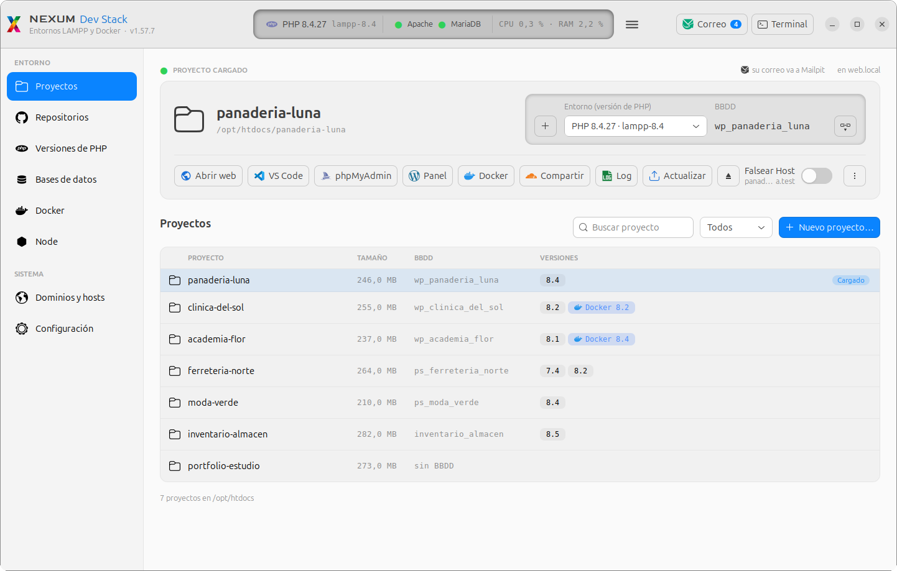
- El programa y su versiónDebajo del nombre, «Entornos LAMPP y Docker» y la versión del programa que tienes instalada. «Acerca de Nexum Dev Stack», en el menú ☰, da más detalles.
- La versión activaEl PHP que está sirviendo tus proyectos y su carpeta (por ejemplo «PHP 8.4.27 lampp-8.4»). Si no hay ninguna, pone «Ninguna versión activa» y «pulsa ▶ para arrancar una».
- Apache y MariaDBEl punto está verde (y late) si el servicio está en marcha, y gris si está parado. Púlsalo: se despliegan los servicios de la versión activa, con sus puertos y sus botones para arrancar, parar o reiniciar cada uno.
- ▶ / ■Arranca o para la versión activa sin abrir nada más. ■ (rojo), con la versión en marcha, la para y la desactiva, como «Parar y desactivar». ▶ (verde), con la versión parada, la arranca. Si no hay ninguna activa, ▶ despliega las versiones que tienes instaladas, con la última que usaste la primera («la última»), y arranca la que elijas.
- Lo que gastaLa CPU y la memoria que usan el programa y sus servicios juntos. Deja el ratón encima para ver cada parte por separado. Se mide cada 3 segundos.
- El menú ☰Tema claro u oscuro, editar los vhosts y el fichero de hosts, volver a leer las versiones, buscar una versión nueva del programa, el panel de la terminal, la carpeta de registros, las novedades y «Acerca de».
- CorreoLa bandeja del correo de pruebas. El número azul son los correos que tienes sin leer. Si apagas el correo de pruebas, este botón no sale.
- TerminalEnseña o esconde una terminal en la parte de abajo de la ventana. Su borde se arrastra para hacerla más alta o más baja.
- EntornoLo de tu trabajo diario: Proyectos, Repositorios, Versiones de PHP, Bases de datos, Docker y Node. En Configuración → Apariencia puedes ocultar las que no uses.
- SistemaLo que se toca de vez en cuando: Dominios y hosts y Configuración.
- La páginaLo de la página elegida. Muchas cosas enseñan más al pasar el ratón por encima, y casi todo lo que cambia algo te dice antes qué va a hacer, con los pasos numerados.
Los servicios de la versión activa
Pulsa «Apache · MariaDB» en el recuadro de arriba. Se despliega un panel con los servicios de la versión activa. Si no hay ninguna activa, te dice «Ninguna versión activa»: arranca una con ▶, en el mismo recuadro, o actívala en Versiones de PHP.
- Arriba, «Servicios de lampp-8.4» y cuántos están en marcha («2 de 3 en marcha»). A la derecha, una pastilla: «Solo desde este equipo» (verde) o «Abierto a la red» (rojo), si se puede entrar desde otros equipos.
- «Arrancar lampp-8.4» (con la versión parada) arranca la versión entera. «Parar y desactivar» (con la versión en marcha)
la para y quita el enlace
/opt/lampp: el comandophpdeja de responder hasta que actives una versión. - Apache: el servidor web, que sirve las webs de
/opt/htdocsy phpMyAdmin. Puertos 80 y 443. - MariaDB: el servidor de bases de datos. Puerto 3306.
- FTP (ProFTPD): acceso por FTP a
/opt/htdocs, por el puerto 21, con el usuario que se indica. No arranca con la versión: arráncalo cuando lo necesites y páralo después. Si lo arrancas aquí, sigue arrancando con la versión hasta que lo pares (lo dice la ficha «arranca con la versión»).
Cada servicio dice si está «En marcha» o «Parado» y tiene sus botones:
- «Arrancar» (si está parado). Antes de arrancarlo, el programa lo deja solo para este equipo y cierra lo que quede en memoria de otras versiones.
- «Reiniciar» y «Parar» (si está en marcha).
Todos piden la contraseña de administrador y se hacen en una ventana de tarea que se cierra sola al acabar («Apache arrancado», «MariaDB parado»…).
Los avisos
Cuando hay algo que conviene hacer, a la izquierda del recuadro de la versión activa sale un botón con un triángulo y el número de avisos. Púlsalo para ver la lista. Si no hay ninguno, el botón no está. Cada aviso explica qué pasa y tiene su botón:
- «Hay parches nuevos» (siempre el primero): la lista de lo que tiene un parche de seguridad publicado (versiones de PHP y sus componentes, imágenes de Docker, Mailpit, cloudflared). «Actualizar todo» te enseña los pasos (con la casilla «Guardar antes una copia en ~/nexum-backups», como en Parches nuevos) y, si aceptas, lo actualiza todo en una tarea; lo de ahora sigue funcionando mientras tanto. «Ahora no» lo quita hasta que salga otro parche distinto; los sigues teniendo en Configuración → Parches nuevos. Se busca al abrir la ventana, el primer arranque de cada día y cada cuatro arranques; si hay, te lo dice un mensaje abajo: «Hay parches nuevos: míralos en los avisos de arriba».
- «Hay un XAMPP sin registrar»:
/opt/lamppes un XAMPP completo y no un enlace a una versión. «Registrar…» te pide un nombre (por ejemplo8.2.12) y lo pasa a/opt/lampp-8.2.12, para gestionarlo junto a las demás. El nombre solo puede llevar números, letras, puntos y guiones. - «Hay procesos de otras versiones en memoria»: solo debería estar en memoria la versión activa; los demás gastan memoria y pueden ocupar los puertos 80, 443 y 3306. «Cerrarlos» los cierra.
- «Tablas del sistema de MariaDB antiguas»: son de una MariaDB anterior y el registro de errores no para de crecer (te dice cuánto ocupa). «Repararlas» te pregunta antes, con la casilla «Guardar antes una copia en ~/nexum-backups» (desmarcada; sin ella avisa en rojo: «Sin copia, las tablas del sistema de ahora no se podrán recuperar.»). Después las pone al día sin tocar las bases de datos de tus proyectos y vacía el registro si es grande. La versión activa tiene que estar en marcha.
- «phpMyAdmin antiguo»: algunas versiones traen un phpMyAdmin con fallos de seguridad ya corregidos. «Actualizarlos»
pone en todas el más nuevo que admite su PHP, con la misma configuración. El anterior queda en la carpeta
phpmyadmin.anteriorde cada versión. - «A algunas versiones les faltan protecciones»: les falta algo de lo que pone el programa (solo para este equipo, phpMyAdmin cerrado a otras webs, MariaDB sin acceso a los ficheros del equipo…). «Protegerlas» se lo pone a todas, como en la activa, y pide la contraseña.
- «Certificados en los que confía todo el equipo»: los certificados https de algunos proyectos sirven para más que su dominio
(o faltan, y Apache no arrancaría). «Arreglarlos» pone a cada uno un certificado propio que solo vale para su dominio y pide la
contraseña. Los vhosts anteriores se copian en
~/nexum-backupssi tienes encendidas las copias de los ficheros que cambia el programa, y los certificados viejos se guardan en una carpeta/etc/ssl/lvm-anteriores-…que solo ve el administrador. Después, el navegador avisará una vez en cada proyecto: acepta el aviso. - «El navegador avisa al abrir estos proyectos»: Chrome y Firefox no aceptan todavía su certificado y sale «La conexión no es privada». «Confiar» hace que lo acepten (solo vale para su dominio). Si el navegador estaba abierto, ciérralo y vuelve a abrirlo.
- «El navegador acepta webs reales que ya no están falseadas»: tiendas que estaban falseadas en
/etc/hostsy ya no. «Quitar» hace que el navegador deje de aceptar su certificado. Luego, cierra y vuelve a abrir el navegador.
Una versión vulnerable no sale aquí: se ve en rojo en su fila de Versiones de PHP, y el programa te avisa si la vas a activar.
El menú ☰
- «Tema oscuro» / «Tema claro»: cambia los colores de esta ventana (el resto del escritorio no se toca). Se recuerda para la próxima vez.
- «Editar vhosts»: el fichero de vhosts de Apache, el que dice qué carpeta sirve cada dominio. Mira abajo cómo se edita.
- «Editar /etc/hosts»: el fichero que dice a qué equipo va cada dominio. Igual que los vhosts.
- «Volver a leer las versiones»: vuelve a leer todo lo que enseña la ventana (versiones, servicios, proyectos, dominios, Docker) y vuelve a preguntar a php.net por los parches. No cambia nada.
- «Buscar actualizaciones»: busca una versión nueva del programa. Mira abajo.
- «Abrir el panel en la terminal»: abre una terminal aparte con el panel de texto del programa (sus menús de siempre, sin
ventana). Si no encuentra ninguna terminal, te dice que abras una y escribas
lvm-instalador. - «Carpeta de registros»: abre
~/.lvm-instalador, donde se guardan los registros de lo que hace el programa. - «Novedades»: qué ha cambiado en cada versión del programa.
- «Acerca de Nexum Dev Stack»: el nombre, la versión y la firma del programa.
Editar los vhosts o el fichero de hosts
Los dos ficheros son del administrador, así que no se editan directamente: el programa te abre una copia.
- Menú ☰ → «Editar vhosts» (o «Editar /etc/hosts»). Se abre una copia en el editor de textos (en
~/.lvm-instalador) y, en la ventana, un diálogo que lo explica. - Haz los cambios en el editor y guárdalos.
- Pulsa «Aplicar» en el diálogo («Cancelar» no cambia nada). Si no has guardado ningún cambio, te lo dice: «No has cambiado nada… (¿guardaste los cambios?)».
- Escribe la contraseña. Si tienes encendidas las copias de los ficheros que cambia el
programa, antes de escribir el fichero nuevo se guarda una copia del actual en
~/nexum-backups.
- Los vhosts se comprueban antes de escribirlos. Si llevan líneas que cambiarían todo Apache, no se aplican. Después se recarga Apache; si no acepta los nuevos, se dejan como estaban. Al acabar: «Vhosts actualizados».
- El fichero de hosts tiene que conservar la línea de
localhost. Desde aquí solo se aceptan líneas nuevas que lleven un dominio a este equipo: una que lo lleve a otra dirección no se aplica (ponla en la terminal conlvm-instalador hosts).
Buscar una versión nueva del programa
Menú ☰ → «Buscar actualizaciones» (sale abajo «Buscando actualizaciones…»). Busca en GitHub y en tu carpeta de Descargas un paquete más nuevo y firmado. Lo mismo se hace solo al abrir la ventana, el primer arranque de cada día y cada cuatro arranques.
- Si no hay ninguna: «Tienes la última versión». Si solo encuentra un paquete sin firma, no lo instala desde aquí y te da la orden para instalarlo en la terminal.
- Si hay una: «Hay una versión nueva de Nexum Dev Stack», de cuál a cuál, de dónde viene y su huella SHA-256. Con «Actualizar a la …» el sistema te pide la contraseña (en su propia ventana), se instala y la ventana se vuelve a abrir. Tus versiones, proyectos y bases de datos no se tocan.
- «La versión … se instala una vez en la terminal»: pasa cuando la versión nueva cambia el propio instalador de actualizaciones. No es un error. «Copiar la orden» la copia: pégala en una terminal (Ctrl+Alt+T), escribe tu contraseña y vuelve a abrir el programa.
El botón Correo
Abre la bandeja del correo de pruebas dentro de la propia ventana (en Configuración → Correo de pruebas). El número son los correos sin leer; al dejar el ratón encima también lo dice.
- Si Mailpit no está instalado, te lleva a Configuración para instalarlo.
- Si la versión activa está parada, te avisa: Mailpit arranca con la versión activa.
- Si falta el componente que enseña la bandeja dentro de la ventana, la abre en el navegador.
La terminal de abajo
El botón «Terminal» de arriba a la derecha la enseña o la esconde. Es tu terminal de siempre, con tu usuario, y empieza en la
carpeta del proyecto cargado (o en /opt/htdocs si no hay ninguno). Al esconderla sigue abierta, con lo que tuvieras
escrito. A su lado, arriba, la carpeta en la que empezó, y estos botones:
- «Vaciar DNS»: escribe por ti
sudo resolvectl flush-caches, que vacía la caché de nombres (DNS) del equipo. La contraseña te la pide la propia terminal. - «Proyecto cargado»: escribe un
cda la carpeta del proyecto cargado. - ↻ («Terminal nueva»): cierra la de ahora y abre otra.
- ✕: la esconde (sigue abierta).
Para copiar y pegar, como en la Terminal de GNOME: Ctrl+Mayús+C y
Ctrl+Mayús+V, o el botón derecho («Copiar», «Pegar», «Seleccionar todo»). Si escribes
exit, se cierra y se esconde; la próxima vez se abre una nueva. Si falta su componente, el programa te dice cómo
instalarlo: sudo apt install gir1.2-vte-2.91.
La ventana de una tarea
Lo que tarda o cambia algo del sistema (instalar, activar una versión, arrancar un servicio, cargar una base de datos…) se hace en su propia ventana. Arriba, qué se está haciendo; luego, la barra de avance con el porcentaje y lo que queda, y el tiempo que lleva. Si la tarea no dice cuánto le falta, la barra se mueve sin porcentaje. Las instalaciones enseñan además la lista de pasos, y cada uno se marca al acabar. «Ver registro» despliega todo lo que va escribiendo.
- «Seguir en segundo plano»: esconde la ventana y puedes seguir usando el programa. Arriba, a la izquierda de los avisos, sale una flecha verde que late con lo que hace y el porcentaje («Instalando… 45 %»); púlsala para volver a ver la ventana. Cerrar la ventana o pulsar Esc hace lo mismo. Al acabar, la ventana vuelve sola para decirte cómo ha ido.
- «Cancelar»: para la tarea. En las instalaciones te pregunta antes («¿Cancelar la instalación?»: se pierde lo descargado y compilado; las versiones instaladas no se tocan).
- «Cerrar»: cuando ya ha acabado.
Al acabar bien sale un check verde grande. Muchas tareas cortas se cierran solas y lo dicen con un mensaje abajo. Si algo falla, pone «No se ha podido completar», la barra se pone roja, se abre el registro y aparece «Ver el log del error»: abre el informe del error (o el registro entero) para copiarlo, con «Copiar todo», «Abrir la carpeta de logs» y «Cerrar».
La contraseña de administrador
Cuando una tarea necesita permisos de administrador, se abre una ventana pequeña: «Contraseña de administrador. Esta acción necesita permisos de administrador. Escribe la contraseña de <tu usuario> para continuar.»
- «Continuar» (o Intro) la manda. Si te equivocas, vuelve a salir con «Contraseña incorrecta. Vuelve a intentarlo.»
- «Cancelar» cancela la tarea, sin dejar nada a medias.
Por seguridad, la contraseña solo se envía si quien la pide es de verdad el sudo del sistema; si no, la tarea se cancela
y lo dice en el registro. La actualización del programa es distinta: la contraseña la pide la ventana del propio sistema.
El icono junto al reloj
Mientras el programa está abierto, junto al reloj hay un icono suyo. Con él, la ✕ de la ventana no cierra el programa: lo esconde. Viene encendido; se apaga en Configuración → Programa, «Dejar en la bandeja al cerrar» (si falta su componente, ahí mismo te dice cómo instalarlo). Su menú:
- «Abrir Nexum Dev Stack»: vuelve a enseñar la ventana (también con el clic de la rueda del ratón sobre el icono).
- Una línea que solo informa: «● lampp-8.4 en marcha», «○ lampp-8.4 parada» o «Ninguna versión activa».
- «Arrancar lampp-8.4» o «Parar y desactivar», como en el panel de servicios. Sin versión activa pone «Elegir una versión…», que abre la ventana en Versiones de PHP.
- «Abrir web.local» (o el dominio del proyecto cargado): solo con un proyecto cargado y la versión en marcha.
- «Salir»: cierra el programa del todo.
- En la barra de menús, junto al reloj, hay un icono con lo básico de la ventana, para usarlo sin abrirla.
Proyectos
La página principal: arriba, el proyecto con el que estás trabajando y todo lo que puedes hacer con él; debajo, la lista de todos tus proyectos.
Un proyecto es cada carpeta de /opt/htdocshtdocs: un WordPress,
una tienda PrestaShop, una web en PHP o en HTML. Cargarlo hace que http://web.local/ lo abra, con la versión
de PHP y la base de datos que elijas. Solo hay uno cargado a la vez; los demás siguen en su carpeta, sin cambiar nada.
Cada versión de PHP tiene sus propias bases de datos. Por eso un mismo proyecto puede tener una base en
lampp-8.2 y otra en lampp-8.4: a cada pareja «versión de PHP + base de datos» el programa la llama
entorno. Un proyecto también puede tener entornos en Docker.
- La versión activaLa versión de PHP que sirve tus proyectos ahora mismo (aquí PHP 8.4.27,
en
lampp-8.4), con un punto verde si Apache y MariaDB están en marcha, y lo que gastan de procesador y memoria. Púlsala para arrancar, parar o reiniciar sus servicios. - El menúTema claro u oscuro, editar los vhosts y el fichero de hosts, volver a leer las versiones, buscar una versión nueva del programa, la carpeta de registros, las novedades y este manual.
- CorreoLa bandeja de pruebas: los correos que han mandado tus webs (un pedido, un formulario de contacto…). Ninguno sale de tu equipo. El número dice cuántos hay sin leer.
- TerminalAbre una terminal abajo, dentro de la ventana, para lanzar
git,composer,wpo lo que necesites. Su botón «Proyecto cargado» te lleva a la carpeta del proyecto. - El menú lateralLas páginas del programa: lo de tu trabajo (proyectos, repositorios, versiones de PHP, bases de datos, Docker y Node) y, debajo, lo del sistema (dominios y configuración).
- El proyecto cargadoSu nombre y su carpeta. El punto verde de «Proyecto cargado» dice que
es el que abre
web.local(«en web.local», arriba a la derecha). Si no hay ninguno cargado, aquí sale el que elijas en la lista, como «Proyecto elegido». - Su correo«su correo va a Mailpit»: los correos que mande la web cargada no salen a internet, se quedan en la bandeja de Correo. Solo sale con el correo de pruebas encendido.
- Añadir entorno (+)Lleva el proyecto a otra versión de PHP (copiando allí su base de datos) o a Docker, para probarlo con otro PHP sin tocar el de ahora. Ver Replicar.
- Entorno (versión de PHP)Los entornos del proyecto: cada versión de PHP donde tiene base de datos y, si está en Docker, «PHP 8.2 · Docker». Elegir otra versión aquí ya carga el proyecto con ella (antes te pregunta si hay que cambiar de versión). Elegir uno de Docker te lleva a la página Docker.
- Su base de datosLa base de datos que usa en el entorno elegido (aquí
wp_panaderia_luna). Si no tiene ningún entorno, sale «—». - VincularElige qué base de datos usa el proyecto en cada versión de PHP, o ninguna. Ver Vincular la BBDD de cada versión.
- Accesos directosAbrir web lo abre en el navegador; VS Code, su carpeta en Visual Studio Code; phpMyAdmin, su base de datos, y Panel, el escritorio de WordPress o el back office de PrestaShop, con el usuario de pruebas ya escrito. Ver los botones del proyecto.
- DockerSi el proyecto no está en Docker, lo monta (eliges PHP, MariaDB y base de datos); si ya está, lo arranca. El de LAMPP sigue igual. Ver Docker desde Proyectos.
- CompartirLe da una dirección de internet temporal (un túnel de Cloudflare) para enseñárselo a alguien: lleva una contraseña nueva al azar y se cierra solo a las horas que digas (2, si no cambias nada). Ver Compartir una web.
- LogEl final del registro de errores de Apache: lo primero que hay que mirar cuando una página sale en blanco o con un error 500.
- ActualizarLo pone al día con lo de producción: su base de datos (un
.sql) y su código (un.zip, un.tar.gzo una carpeta), congit pullantes si quieres. Si marcas su casilla, guarda una copia de lo que sustituye. Ver Actualizar un proyecto. - DesmontarLo descarga:
web.localdeja de abrirlo y enseña una página vacía. No pregunta antes, pero no se borra nada, ni la carpeta ni la base de datos. - Falsear HostSi el proyecto tiene un dominio en los vhosts (debajo sale cuál), este interruptor hace que su dirección de verdad se abra en tu equipo y no en internet. Sirve para probar una tienda con su dominio real. Ver Falsear Host.
- Más (⋮)Vincular sus bases de datos, abrir su carpeta, quitarlo de Docker, vaciar la caché de una tienda, las imágenes de producción, personalizar los botones o borrar el proyecto. Ver el menú Más.
- Buscar y filtrarEscribe parte del nombre de la carpeta o de su base de datos para encontrarlo, y elige qué tipo ver: Todos, WordPress, PrestaShop u Otros.
- Nuevo proyecto…Clona un repositorio (de GitHub o de otro servidor) en
/opt/htdocshtdocsy lo deja montado: su carpeta, su versión de PHP, su base de datos y, si quieres, su dominio falseado. Ver Nuevo proyecto. - El que está cargadoEn la lista, el cargado va resaltado y con la etiqueta «Cargado». Arriba se ve siempre el cargado: pulsar otra fila solo la marca; para cargarla, usa su botón «Cargar».
- Dónde está cada unoEn qué versiones de PHP tiene base de datos (8.2, 8.4…) y, en azul, si también está en Docker. Deja el ratón encima para ver la versión y la base de cada uno. Su tamaño en disco y el nombre de su base de datos van al lado.
- CargarSale al pasar el ratón por una fila que no es la cargada. Carga ese proyecto; si tiene base de datos en varias versiones, te pregunta cuál. Ver Cargar un proyecto.
- El ⋮ de la filaTambién al pasar el ratón: llevar ese proyecto a otra versión o a Docker, importar su SQL y lo mismo que el menú Más, sin cambiar el proyecto de arriba. Ver el menú de cada fila.
El visor de arriba
Arriba está siempre el proyecto cargado, con todos sus botones. Elegir otra fila de la lista no lo cambia: la fila elegida solo se marca. Así no pierdes de vista con qué estás trabajando.
- «PROYECTO CARGADO», con el punto verde: el que abre
web.local. Tiene todos los botones. - «PROYECTO ELEGIDO»: solo cuando no hay ninguno cargado. Es la fila que has pulsado. Arriba a la derecha pone «web.local → nada». Solo tiene el selector de Entorno, el +, el de vincular, el botón azul «Cargar» y el menú ⋮.
- «NINGÚN PROYECTO CARGADO»: no hay ninguno cargado ni elegido. Dice «Elige un proyecto de la lista para cargarlo.».
Cargar un proyecto
- Busca su fila en la lista (con el buscador, si tienes muchos).
- Pasa el ratón por la fila y pulsa «Cargar». Si no hay ningún proyecto cargado, también puedes pulsar la fila: sale arriba como «Proyecto elegido», con su botón «Cargar».
- Elige la versión, si te lo pregunta. Si el proyecto tiene base de datos en varias versiones de PHP, sale «Cargar proyecto» con una tarjeta por versión (ver abajo).
- Confirma, si hace falta. Si hay que cambiar de versión de PHP, te lo dice antes. Puede pedirte la contraseña de administrador.
- Ábrelo. El punto se pone verde («Proyecto cargado») y aparecen sus botones: pulsa Abrir web y lo verás en
http://web.local/.
El diálogo «Cargar proyecto» sale cuando el proyecto puede ir en más de una versión:
- Si tiene base de datos en varias, pregunta «¿Qué versión del proyecto y de PHP quieres?» y explica que cada versión guarda su propia copia de la base (se cambian con el botón de vincular).
- Si su base no está en ninguna versión, dice «La BBDD de panaderia-luna (wp_panaderia_luna) no está en ninguna versión: súbela después en la pestaña BBDD» y te deja elegir con qué PHP cargarlo. Si ni siquiera se sabe qué base usa, también lo dice.
- Cada versión va en una tarjeta: «PHP 8.4.27 (lampp-8.4)» y, al lado, su base, «la activa» y «la de su .php-version» si
lo es. Debajo, la fecha de su base de datos. Viene marcada la activa (o la de su
.php-version). - Pulsa «Cargar proyecto».
Lo que pregunta antes:
- «¿Cambiar a PHP …?»: si hay que cambiar de versión (y no la acabas de elegir en el diálogo anterior). Te dice qué versión
se para, cuál se activa y que
web.localapuntará al proyecto. Botón «Cargar panaderia-luna». - «¿Crear web.local?»: si todavía no existe. Se crea, con http y https, su certificado y su línea en el fichero de hosts.
Lo que hace al cargarlo:
- Pide la contraseña de administrador antes de cambiar nada. Es todo o nada: si falla o lo cancelas, todo vuelve a como estaba (el proyecto de antes y la versión de antes).
- Apunta
web.locala su carpeta y activa, arranca o recarga la versión de PHP que toca. - Ajusta su configuración a la base de datos local: el
wp-config.phpde un WordPress o la de una tienda PrestaShop. La base con la que lo cargas queda recordada para esa carpeta. Con las copias de los ficheros que cambia el programa encendidas, la configuración de antes se guarda en~/nexum-backups. - Tienda PrestaShop: le crea el vhost y el certificado de su dominio y lo falsea. Si su caché era de otra base de datos (de Docker o de
producción), la borra (o la aparta a
~/nexum-backups, con las copias de los ficheros encendidas); se rehace sola. - Los dominios falseados de los demás proyectos vuelven a llevar a su web real.
- Pone al día el correo de pruebas y las imágenes de producción de ese proyecto.
.sql con «Importar SQL…» del
menú de su fila (te lleva a Bases de datos) o llevarla desde otra versión con el
+ de «Entorno» (Replicar).Desmontar
El botón con el icono de expulsar (⏏), «Desmontar el proyecto», está al final de los botones del proyecto cargado.
- No pregunta antes: se pone en marcha al pulsarlo. Puede pedirte la contraseña de administrador.
web.localdeja de abrir el proyecto y enseña una página vacía.- Los dominios falseados vuelven a llevar a su web real, y se quita la regla de las imágenes de producción.
- No se borra nada: ni la carpeta ni la base de datos. Para volver, cárgalo otra vez.
Vincular la BBDD de cada versión
Vincular es decirle al programa qué base de datos usa el proyecto en cada versión de PHP. Hace falta cuando la base no se llama como la carpeta, cuando tienes varias copias (una antigua y una nueva) o cuando quieres que una versión deje de ir con ese proyecto. Se abre con el botón del enlace, junto a la base de datos («Cambiar la BBDD de cada versión (vincular)»), o con «Vincular la BBDD de cada versión…» del menú ⋮.
- Sale «BBDD de panaderia-luna en cada versión», con una fila por cada versión instalada: «PHP 8.4.27 (lampp-8.4)».
- En cada fila, una lista con «— Ninguna —» y las bases de esa versión. Si una ya es de otro proyecto, sale como «wp_clinica_del_sol (de clinica-del-sol)». Si la versión no tiene ninguna base, la lista sale apagada.
- Cada base es de un solo proyecto en cada versión: si eliges una que era de otro, deja de ser suya.
- Con «— Ninguna —», la carpeta deja de ir con esa versión. La base no se toca.
- Pulsa «Guardar». No pide contraseña ni cambia ninguna base: solo apunta los vínculos
(en
~/.lvm-instalador/proyectos).
Después, al cargar el proyecto se usa la base vinculada. Si tiene una en varias versiones, «Cargar» te pregunta cuál, y todas salen en la lista «Entorno» y en los números de versión de su fila.
Llevarlo a otra versión de PHP (Replicar)
Para probar un proyecto con otro PHP sin tocar el de ahora: se copia su base de datos a la otra versión, con otro nombre, y allí queda vinculada a la carpeta. Se abre con el + de «Entorno» → «En otra versión de PHP (copiar su BBDD)…» o con «Añadir entorno en otra versión de PHP…» del menú de una fila.
- Proyecto: el cargado (o el de la fila desde la que lo has abierto). Solo salen los que tienen base en alguna versión.
- Desde: de qué versión se copia, con su base: «PHP 8.4.27 (lampp-8.4) · BBDD wp_panaderia_luna».
- A la versión: la de destino.
- Nombre de la BBDD: se propone solo, con la versión al final (
wp_panaderia_luna_8_4→wp_panaderia_luna_8_2). Debajo te dice si se crea nueva o, en rojo, si ya existe y se sustituye. - Carpeta: con qué carpeta se cargará en esa versión (la misma, otra o «— Ninguna: vincúlala después —»).
Al pulsar «Replicar» te enseña los pasos y pregunta «¿Replicar en lampp-8.2?». La versión de origen no se toca.
- Si la de destino no es la versión activa, se arranca su MariaDB solo para la copia y se pide la contraseña de administrador.
- Si ya había una base con ese nombre, el botón pasa a ser «Sustituir en lampp-8.2», en rojo, y la confirmación trae la casilla «Guardar antes una copia en ~/nexum-backups», desmarcada. Sin ella, avisa en rojo: «Sin copia, lo que se sustituya no se podrá recuperar.» Márcala si la base que hay en el destino tiene algo que quieras conservar.
- Pulsa el + de «Entorno» y elige «En otra versión de PHP (copiar su BBDD)…».
- Elige desde dónde, a qué versión y con qué nombre, y pulsa «Replicar». Confirma.
- Elige esa versión en «Entorno». Se carga con ella. La de antes sigue igual: vuelve cuando quieras eligiéndola otra vez.
El + tiene una segunda opción, «En Docker…»: lleva a la página Docker con el proyecto ya elegido para «Proyecto en Docker…».
Los botones del proyecto cargado
Cuáles se ven, en qué orden y cómo se eligen en Personalizar los botones. Al dejar el ratón encima, cada uno dice lo que hace.
- «Abrir web»: abre
http://web.local/en el navegador. - «VS Code»: abre su carpeta en Visual Studio Code. Si ya estaba abierta, trae su ventana delante. Solo sale si VS Code está instalado.
- «phpMyAdmin»: abre su base de datos en el phpMyAdmin de la versión activa. Sale apagado si no se sabe qué base usa.
- «Panel»: el escritorio de WordPress o el back office de PrestaShop (con su logotipo). Antes deja al día el
administrador de pruebas (
local@local.test, contraseñalocal) y abre la pantalla de acceso con los dos ya escritos: solo hay que pulsar Entrar. Sale apagado si el proyecto no es un WordPress ni una tienda. - «Docker»: ver Docker desde Proyectos.
- «Compartir»: abre un túnel de Cloudflare. Mientras está abierto dice «Compartiendo», en verde, y te enseña la dirección y la contraseña. Todo, en Compartir una web.
- «Log»: las últimas 400 líneas del registro de errores de Apache, con «Copiar todo» y «Actualizar». Sale apagado («Aún no hay log de Apache») si todavía no existe.
- «Actualizar»: ver Actualizar un proyecto.
- «Importar»: solo en WordPress y PrestaShop. Abre lo de las imágenes de producción.
- Desmontar (⏏): ver Desmontar.
- Falsear Host: ver Falsear Host.
- ⋮: ver el menú Más.
Falsear Host
Sale junto a los botones del proyecto cargado, uno por cada dominio de los vhosts que apuntan a su carpeta (los .local
no). Encima pone «Falsear Host» o «Host falseado», y debajo el dominio (por ejemplo, mitienda.com).
- Encendido: ese dominio lleva a tu equipo. El navegador abre tu copia local con la dirección de verdad.
- Apagado: el dominio vuelve a llevar a la web real, en internet.
- No pregunta antes. Pide la contraseña de administrador y, con las copias de los ficheros que cambia el
programa encendidas, guarda una copia del fichero de hosts en
~/nexum-backups. - Al cargar otro proyecto, los dominios falseados de este vuelven a la web real. Lo mismo se hace en Dominios y hosts.
Actualizar un proyecto
Pone el proyecto cargado al día con lo de producción: su base de datos, su código o las dos cosas. Se abre con el botón «Actualizar».
- «Base de datos de producción»: arrastra aquí el volcado o pulsa «Elegir fichero…». Vale un
.sql, un.sql.gzo un.zip. Debajo te dice en qué base se carga («Se carga en la BBDD wp_panaderia_luna (al confirmar, puedes guardar antes una copia de la actual)»). Si el proyecto aún no tiene base, escribes su nombre. Sin fichero, «Se sigue usando la BBDD …». - «Código de producción»: arrastra aquí un
.zip, un.tar.gz(o.tar,.tgz,.tar.bz2,.tar.xz) o una carpeta, o pulsa «Elegir fichero…» o «Elegir carpeta…». La ✕ lo quita. - «Fusionar: copia lo que trae y deja lo demás de la carpeta» (la de partida) o «Sobrescribir: además borra lo que no
traiga». Solo se pueden elegir si has puesto código. Debajo, en rojo, te recuerda que su
.gitno se toca y que lo sustituido o borrado solo se puede recuperar si al confirmar guardas antes una copia en~/nexum-backups.
Al pulsar «Actualizar…» te dice antes lo que va a hacer, paso a paso:
- Si has puesto código y la carpeta es un repositorio de git, pregunta «¿Hacer git pull antes de copiar?». Te enseña la rama y si tienes cambios sin commit o commits sin subir (revísalos antes: lo sustituido no queda en git, solo en la copia, si la guardas). Botones «Cancelar», «Copiar sin pull» y «Hacer pull y copiar» (este, solo si tiene origin y está en una rama). Si el pull choca con tus cambios, se para sin tocar nada.
- Si no, pregunta «¿Actualizar panaderia-luna?».
- Las dos preguntas traen la casilla «Guardar antes una copia en ~/nexum-backups», desmarcada. Sin ella, avisa en rojo: «Sin copia, lo que se sustituya no se podrá recuperar.» Márcala si en la carpeta o en la base hay algo que no esté en producción ni en git.
- Con un fichero de base de datos, si el usuario root de MariaDB tiene contraseña, te la pide.
Lo que hace, en este orden (si un paso falla, no sigue). Antes de nada pide la contraseña de administrador:
git pull, si lo has pedido.- Copia el código encima de la carpeta. Su
.gitno se toca, y lo que no cambia no se vuelve a escribir. Si el paquete trae todo dentro de una carpeta (comopublic_html), se usa lo de dentro. - Vacía la base y carga el volcado, con la carga protegida.
- Vuelve a cargar el proyecto, para que su configuración apunte otra vez a la base y al dominio locales, y lo comprueba.
~/nexum-backups/panaderia-luna-antes-de-actualizar-…, y la base de antes (si tenía tablas) a ~/nexum-backups,
como .sql.gz. Sin ella, lo que el código sustituye o quita se borra. Si cancelas a medias, el proyecto queda con lo hecho
hasta ese momento, y lo sustituido sigue en ~/nexum-backups si guardaste la copia.Imágenes de producción
Las imágenes de una web (las de wp-content/uploads o img) no suelen ir en git, así que tu copia local se ve
sin fotos. El programa lo arregla de dos formas distintas, según el tipo de proyecto. En los dos casos se abre con el botón
«Importar» o desde el menú ⋮.
WordPress: «Imágenes de producción…». No descarga nada: lo que falte se pide a la web real.
- Escribe el dominio de producción (solo el dominio, como
mitienda.com). El programa propone el de su base de datos («Es el dominio de su BBDD: compruébalo antes de guardar.»). No vale un.localni un.test. - Pulsa «Guardar». Mientras el proyecto esté cargado (y también en el Apache de Docker, si está allí), cada imagen, vídeo o PDF
de
wp-content/uploadsque no esté en tu carpeta se pide a la web real con una redirección. Lo que ya tienes en local se sigue sirviendo desde aquí. - No cambia tu carpeta ni tu base de datos. Sí cambia el vhost de
web.local: pide la contraseña de administrador, guarda antes una copia de los vhosts en~/nexum-backups(si tienes encendidas las copias de los ficheros que cambia el programa) y recarga Apache. - Va con el proyecto: al cargar otro o desmontarlo, se quita sola, y vuelve al cargarlo otra vez.
- Para quitarlo, abre el mismo diálogo y pulsa «Quitar» (solo sale si hay un dominio guardado).
PrestaShop: «Descargar de producción las imágenes que faltan…». Una tienda se ve con su dominio real falseado, así que una redirección volvería a tu equipo: aquí sí se descargan.
- No pide nada: el dominio sale de la base de datos de la tienda. Pregunta «¿Descargar las imágenes que le faltan a ferreteria-norte?» y pulsas «Descargar». Si el usuario root de MariaDB tiene contraseña, te la pide.
- Mira en su base qué imágenes de productos, categorías y marcas (con sus miniaturas) faltan en su carpeta
imgy las descarga de la web real. La base es la de la versión activa o, si no está allí, la de su proyecto del Apache de Docker. - Como el dominio está falseado en tu equipo, se busca con DNS cifrado (Cloudflare) y se comprueba su certificado real. Cada fichero solo se guarda si llega entero, y lo que ya está en local no se toca.
- Con muchos productos puede tardar y ocupar bastante. Es una descarga de una vez: no hay nada que apagar, las imágenes se quedan en
img(la misma carpeta para LAMPP y Docker).
Docker desde Proyectos
El botón «Docker» del proyecto cargado, y «Montar en Docker» al pasar el ratón por una fila que ya está en Docker, hacen lo que toque según cómo esté:
- Docker no está instalado o está apagado: pregunta «Docker no está instalado» (o «Docker está apagado») y ofrece «Instalar Docker» o «Arrancar Docker». Se instala sin root, con tu usuario, y pide la contraseña de administrador. Al acabar, sigue.
- El proyecto no está en Docker: abre «Montar panaderia-luna en Docker» (ver abajo).
- Está en Docker con una versión de PHP: lo arranca y te lleva a la página Docker. Si ya estaba en marcha, te da su dirección.
- Está con varias: pregunta «¿Qué versión de panaderia-luna montas?», con cada versión, su dirección y si está en marcha, y «Otra versión de PHP…» para montarlo con otra. Botón «Montar».
El diálogo «Montar … en Docker». Se descargan las imágenes de Docker que falten. La carpeta y su base de datos de LAMPP no se tocan.
- PHP y MariaDB: proponen las de la versión activa.
- BBDD (o «BBDD que se copia», si no es un WordPress): «Ninguna: empieza vacía» o una de sus bases de LAMPP, como «wp_panaderia_luna (lampp-8.4)».
- Cómo (solo WordPress): «En vivo: la misma que web.local (sin copias)», que es la de partida, o «Una copia en Docker». En vivo, lo que cambies en un lado se ve en el otro. Solo tiene efecto si has elegido una base.
- Dominio: la dirección
https://…que tendrá en el Apache de Docker. Cambia al cambiar el PHP.
Pulsa «Montar en Docker». Al acabar te lleva a la página Docker, con su dirección.
«Añadir entorno en Docker…», del menú de una fila, hace lo mismo. Si el proyecto ya está en el Apache de Docker, abre en cambio «Versiones de PHP de …», para elegir, quitar o añadir otra versión de PHP.
El menú Más (⋮) del visor
El ⋮ del final de los botones, también en un proyecto elegido sin cargar. Algunas opciones solo salen en ciertos proyectos:
- «Vincular la BBDD de cada versión…»: ver Vincular.
- «Abrir la carpeta»: abre su carpeta en el gestor de archivos.
- «Eliminar de Docker…»: solo si está en Docker (una por cada entorno de Docker). Pregunta «¿Borrar panaderia-luna de Docker?»: se borran sus contenedores, su copia de la base de datos en Docker y su vhost de Docker. La carpeta y las bases de LAMPP no se tocan. La copia de Docker se borra sin guardar antes otra.
- «Vaciar la caché de la tienda»: solo en PrestaShop. Borra lo que hay en su
var/cache(se rehace sola). No pregunta antes ni guarda copia. - «Limpiar proyecto…»: su caché, sus registros y, en WordPress, los restos de las actualizaciones. Ver Limpiar un proyecto.
- «Descargar de producción las imágenes que faltan…» (PrestaShop) o «Imágenes de producción…» (WordPress): ver Imágenes de producción.
- «Personalizar los botones…»: ver Personalizar los botones.
- «Borrar el proyecto…»: ver Borrar un proyecto.
El menú ⋮ de cada fila
Sale al pasar el ratón por una fila que no es la cargada, junto a «Cargar». Actúa sobre ese proyecto sin cambiar el de arriba. Tiene tres opciones más, y después las mismas del menú Más:
- «Añadir entorno en otra versión de PHP…»: Replicar, con ese proyecto ya elegido.
- «Añadir entorno en Docker…»: ver Docker desde Proyectos.
- «Importar SQL…»: te lleva a Bases de datos, a «Subir o actualizar una BBDD», con ese proyecto y su base de la versión activa ya elegidos. Solo falta el fichero.
Limpiar un proyecto
«Limpiar proyecto…», en cualquiera de los dos menús ⋮. Sirve para quitar lo que el proyecto va acumulando sin que te haga falta: su
caché y sus registros. Las imágenes y todo lo que se sube a la web no se tocan nunca (ni wp-content/uploads ni el
img de PrestaShop), y las carpetas se quedan, vacías.
- Caché. WordPress:
wp-content/cache. PrestaShop:var/cachey la de Smarty (cache/smarty/compile,cache/smarty/cache) y, en las 1.6,cache/cachefs. Se rehace sola: la primera visita va algo más lenta. - Registros. WordPress:
wp-content/debug.logy los de WooCommerce (wp-content/uploads/wc-logs). PrestaShop:var/logs,logen las 1.6 y los registros de los módulos (modules/…/logs). - Restos de actualizaciones (WordPress):
wp-content/upgradeywp-content/upgrade-temp-backup, lo que deja WordPress al actualizar.
El diálogo «Limpiar «panaderia-luna»» enseña solo lo que ese proyecto tiene, cada cosa con sus carpetas, lo que ocupa y cuántos ficheros, y con su casilla marcada. Desmarca lo que quieras conservar y pulsa «Limpiar lo marcado…». Te pregunta antes «¿Limpiar «panaderia-luna»?», con lo que se va a hacer numerado y el aviso en rojo «Lo que se limpia no se puede recuperar: no se hacen copias.». Pulsa «Limpiar», en rojo. Si algo es del administrador (lo que creó Apache), se pide su contraseña. Si el proyecto no tiene nada, te lo dice: «No hay cachés ni registros que limpiar en …».
En la terminal: lvm-instalador limpiar-proyecto panaderia-luna (todo) o con lo que quieras limpiar detrás
(cache, registros, actualizaciones).
Borrar un proyecto
«Borrar el proyecto…», en cualquiera de los dos menús ⋮.
- Te dice qué se borra: su carpeta, sus vhosts y las líneas de sus dominios en el fichero de hosts y, si está en Docker, sus contenedores. La carpeta no se puede recuperar.
- «Borrar también su BBDD … (lampp-8.4, la de phpMyAdmin)»: solo la de la versión activa, y solo si lo marcas. Si marcas también «Guardar antes una copia en ~/nexum-backups (se puede volver a cargar)», que viene desmarcado, antes se guarda un volcado. Sin ella, avisa en rojo: «Sin copia, la BBDD no se podrá recuperar.» Márcala si la base no está en producción ni en otra versión.
- Escribe el nombre de la carpeta para confirmar: el botón «Borrar el proyecto» no se enciende hasta entonces.
- Pide la contraseña de administrador (y la de MariaDB, si borras la base y root la tiene).
Va en orden y, si un paso falla, no sigue; la carpeta es lo último. Si es el cargado, primero lo desmonta. Si está en Docker y Docker
no está en marcha, se para ahí. Si has pedido la copia de la base y falla, no se borra nada. De los vhosts y del fichero de hosts guarda
copia en ~/nexum-backups si tienes encendidas las copias de los ficheros que cambia el programa. Las bases de las otras versiones no se tocan.
Personalizar los botones
«Personalizar los botones…», en el menú ⋮ (o «Personalizar…» en Configuración → Apariencia). Vale para los botones del proyecto cargado y para los del visor de un proyecto de Docker.
- La lista (a la izquierda): Abrir web, VS Code, phpMyAdmin, Panel, Docker, Compartir, Log, Actualizar e Importar. Su casilla dice si se ve («Verlo en el visor»), y las flechas «Antes» y «Después» lo mueven.
- Estilo: «Con su nombre» (como vienen), «Solo el icono (cuadrado)» o «Icono y nombre (cuadrado)». Con solo el icono, el nombre sale al dejar el ratón encima.
- Tamaño: el lado del cuadrado, de 32 a 128 píxeles (se ve al lado, como «44×44 px»). Al cambiar de estilo propone 44 o 88; con «Icono y nombre», como poco 72. Con «Con su nombre» no se usa.
- «Así quedan»: una vista previa, del tamaño real, con Desmontar y ⋮.
- «Como al principio»: todos visibles, en el orden de siempre y con su nombre.
- «Guardar» lo aplica. «Cancelar» lo deja como estaba.
Desmontar, ⋮ y los propios de Docker (Versiones de PHP, Arrancar o Parar) salen siempre. Falsear Host no se puede quitar.
La lista de proyectos
- Columnas: PROYECTO (con el icono de WordPress, PrestaShop o carpeta), TAMAÑO, BBDD y VERSIONES.
- Tamaño: lo que ocupa en el disco. Se mide poco a poco, por detrás: mientras tanto pone «…». Al dejar el ratón encima, dice cuándo se midió.
- BBDD: su base de datos, o «sin BBDD» si no se le conoce ninguna.
- Versiones: un número por cada versión de PHP donde tiene base (8.2, 8.4…) y, en azul, «Docker 8.2» si está en Docker. Son solo informativos: al dejar el ratón encima dicen la versión y la base, pero no se pueden pulsar.
- Al pasar el ratón salen sus botones: «Montar en Docker» (si ya está en Docker), «Cargar» y ⋮ (si no es la cargada).
- El buscador («Buscar proyecto») encuentra por el nombre de la carpeta y por el de sus bases de datos: «panaderia» encuentra el proyecto aunque solo su base se llame así.
- El filtro: «Todos», «WordPress», «PrestaShop» u «Otros».
- Debajo, cuántos hay: «7 proyectos en
/opt/htdocshtdocs».
Nuevo proyecto
El botón azul «Nuevo proyecto…» abre un asistente de cuatro pasos en su propia ventana. Clona un repositorio, lo carga en la versión de PHP que elijas y le crea su base de datos. Abajo: «Cancelar», «Atrás» y «Siguiente» (en el último, «Montar proyecto»). Siguiente no se enciende hasta que el paso está bien, y debajo te dice, en rojo, lo que falla.
- Paso 1 de 4: el repositorio. En «¿De qué repositorio de GitHub?» escribe parte de su nombre: salen los tuyos (si has
conectado GitHub en Configuración → GitHub). Elige uno con el ratón, con Intro o con la flecha abajo. O
escribe la dirección de otro, de GitHub o de cualquier servidor (
https://…ogit@servidor:usuario/repositorio.git). En «Carpeta en/opt/htdocshtdocs» se pone su nombre solo; cámbialo si quieres (no puede existir ya). Se clona con tu usuario, por SSH con tu clave; un repositorio privado por https se prueba solo por SSH. - Paso 2 de 4: versión de PHP. Elige en cuál se crea. Viene marcada la activa.
- Paso 3 de 4: BBDD nueva. Su nombre (se propone
wp_y el de la carpeta, comowp_panaderia_luna) y, si quieres, el volcado que se le carga (.sql,.sql.gzo.zip). Sin volcado, se crea vacía. No puede existir ya en esa versión. - Paso 4 de 4: dominio de producción. Enciende «¿Falsear su dominio de producción en este equipo?» y escribe el dominio (como
mitienda.com) para que el navegador abra tu copia local con su dirección de verdad. Lo necesitan las tiendas PrestaShop y los WordPress con el dominio en su base. Si no, se abre enweb.local. Si el repositorio de GitHub tiene su web puesta, el dominio ya viene escrito (y, en una tienda, encendido).
Al pulsar «Montar proyecto»: clona el repositorio, lo carga en esa versión (pide la contraseña de administrador) y crea la base o carga el volcado. Después, si lo has pedido, falsea el dominio. Al acabar, queda como proyecto cargado.
Preguntas
¿Por qué web.local?
Es la dirección del proyecto cargado, y siempre es la misma: cargues el que cargues, lo abres en http://web.local/.
Así no hace falta crear un dominio para cada proyecto ni cambiar la configuración de ninguno.
He pulsado otro proyecto de la lista y arriba sigue el de antes
Es así a propósito: arriba se ve siempre el cargado. Para cambiar, pasa el ratón por la fila del otro y pulsa «Cargar».
¿Puedo tener varios proyectos abiertos a la vez?
En web.local, solo el cargado. Para tener otro a la vez, móntalo en Docker: cada proyecto de Docker tiene su propia
dirección y su propia versión de PHP.
¿Qué diferencia hay entre «Vincular» y «Replicar»?
Vincular solo dice qué base, de las que ya hay, usa el proyecto en cada versión: no copia nada. Replicar copia su base a otra versión y la deja vinculada allí.
¿Las imágenes de producción cambian mi web?
En WordPress, no: solo se piden a la web real las que faltan, mientras el proyecto está cargado. En PrestaShop se descargan a su
carpeta img y se quedan allí. En ninguno de los dos casos se toca la base de datos.
¿Dónde están las copias que guarda?
En ~/nexum-backups, con la fecha en el nombre. Solo se guardan las que pides: al cargar una base encima de otra, al
sustituirla, al actualizar o al borrar, marcando «Guardar antes una copia en ~/nexum-backups» (viene desmarcada). Los vhosts, el
fichero de hosts y la configuración de los proyectos se copian antes de cambiarlos si enciendes las copias de los ficheros que
cambia el programa, en Configuración → Carpetas. Allí ves cuánto ocupan y las borras con «Borrar…».
¿Qué se borra al borrar un proyecto?
Su carpeta, sus vhosts y las líneas de sus dominios en el fichero de hosts, y sus contenedores de Docker si los tiene. Su base de
datos de la versión activa solo si lo marcas, con copia en ~/nexum-backups si marcas también su casilla. La carpeta no se puede
recuperar: si está en GitHub, vuelve a clonarla con «Nuevo proyecto…». Ver Borrar un proyecto.
Repositorios de GitHub
Los repositorios de tu cuenta o de tu organización en GitHub, para clonarlos en tu equipo con un clic y traer sus cambios cuando los haya.
La lista se lee con un token de GitHub (o con tu sesión de la herramienta gh) y los repositorios se clonan
por SSH, con tu propia clave. Antes de usar esta página hay que conectar GitHub en
Configuración → GitHub (lo explica la primera tarea). Si no está conectado, o falta la organización o cuenta, la página
lo dice en una tarjeta con el botón «Ir a Configuración», que te lleva directamente a ese apartado.
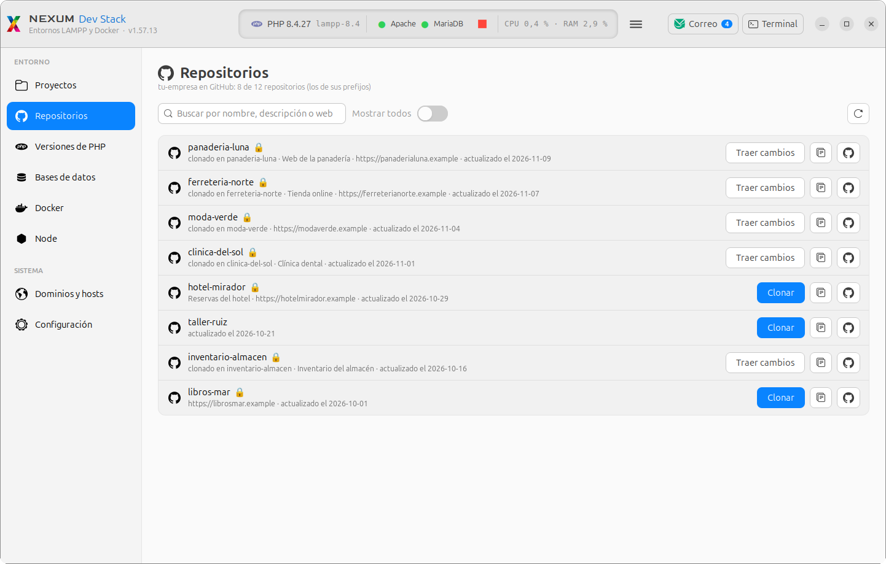
- De quién sonLa cuenta u organización de GitHub y cuántos repositorios ves de los que tiene.
Si usas prefijos (por ejemplo, solo los que empiezan por
wordpress-), lo dice: «(los de sus prefijos)». - BuscarPor nombre, descripción o dirección de la web. Filtra la lista al momento.
- Mostrar todosEnseña también los que no empiezan por ninguno de tus prefijos. Los archivados no salen nunca.
- Leer de nuevoVuelve a pedir la lista a GitHub. Al entrar en la página ves al momento la de la última vez, y la nueva llega detrás (mientras tanto, en su sitio gira una rueda). Sin conexión se queda la anterior, con un aviso «⚠».
- Cada repositorioSu nombre, con un candado 🔒 si es privado, y debajo si ya está clonado (y en qué carpeta), su descripción, su web y cuándo cambió por última vez. Delante, el logotipo de WordPress o de PrestaShop si su nombre lo lleva; si no, el de GitHub.
- Traer cambiosSi ya está clonado: trae lo nuevo de GitHub (
git pull) y lo junta con lo tuyo. Antes te pregunta. Si choca con algo que tienes sin guardar o sin subir, no toca nada y te lo dice. Pide la contraseña de administrador. - ClonarSi aún no está en tu equipo: lo clona por SSH en
/opt/htdocshtdocs, con la carpeta llamada como el repositorio. Después lo verás en Proyectos, listo para cargar. Pide la contraseña de administrador. Si ya hay una carpeta con ese nombre que no es este repositorio, el botón sale gris («Ya hay una carpeta con ese nombre»). - Copiar repositorioCopia su dirección (
git@github.com:…) para pegarla, por ejemplo, en «Nuevo proyecto», que además de clonarlo le crea su base de datos. Abajo sale «Repositorio copiado: …». - Abrir en GitHubAbre la página del repositorio en el navegador.
Conectar GitHub (la primera vez)
- Ve a Configuración → GitHub y pulsa «Conectar con un token…». Si tienes instalada la herramienta
ghy ya has entrado congh auth login, también tienes «Usar la sesión de gh», que no necesita token. - Crea el token. En el diálogo «Conectar con GitHub», el enlace «Crear un token en GitHub» abre GitHub con los permisos ya
marcados:
repo(para ver también los privados) yread:org(para los de una organización). Cópialo y pégalo en el campo (empieza porghp_…ogithub_pat_…; mientras lo escribes no se ve). - Pulsa «Conectar». Se activa cuando el campo tiene al menos 20 caracteres. Abajo sale «Comprobando el token con GitHub…» y, si vale, «Conectado a GitHub como …». El token se guarda en el llavero de tu sesión, nunca en un fichero.
- Elige de quién ves los repositorios. Si aún no habías puesto ninguna, se pone tu propia cuenta. Para otra, en «Organización o
cuenta» escribe su nombre (por ejemplo,
mi-empresa) y pulsa «Guardar». En «Prefijos» puedes poner con qué empiezan los nombres que te interesan, separados por espacios; vacío, se ven todos.
Clonar un repositorio
- Búscalo en la lista y pulsa «Clonar».
- Escribe la contraseña de administrador si te la pide, al empezar la tarea.
- Espera a que acabe. Verás la tarea «Clonando …» y, al terminar, el aviso «…, en Proyectos». Se clona con tu usuario.
- Cárgalo en Proyectos con su versión de PHP y su base de datos. Clonar solo trae el código: la base de datos la cargas tú (en Bases de datos) o la crea «Nuevo proyecto». Al cargarlo, el dominio de su base de datos no se falsea solo.
ssh -T git@github.com.Traer los cambios de un repositorio clonado
- Pulsa «Traer cambios» en su fila.
- Confirma. Te pregunta «¿Traer los cambios de GitHub a …?» y explica que se juntan con los tuyos. Pulsa «Traer los cambios» y escribe la contraseña de administrador si te la pide.
- Mira el resultado. Si va bien, dice que la carpeta está al día con GitHub y en qué rama. Si choca con lo que tienes sin guardar
o sin subir (o no hay conexión), no toca nada: guarda o sube tus cambios (
git status) y vuelve a probar.
Preguntas
No veo un repositorio que sé que existe
Puede que no empiece por ninguno de tus prefijos (activa «Mostrar todos»), que esté archivado, o que sea privado de una cuenta que no es la tuya: de otra persona solo se ven sus repositorios públicos. De tu cuenta y de las organizaciones, también los privados.
¿Clonar me deja el proyecto montado, con su base de datos?
No: solo lo clona. Para clonarlo y montarlo de una vez (carpeta, base de datos y configuración), usa «Nuevo proyecto» en la página Proyectos.
Dice que el token ya no vale
Ha caducado o lo has borrado en GitHub. Crea otro y conéctalo de nuevo en Configuración → GitHub con «Conectar con un token…».
El botón «Clonar» está gris
Ya hay en tu carpeta de proyectos una carpeta con el nombre del repositorio que no es un clon suyo. Muévela o cámbiale el nombre.
Versiones de PHP
Todas tus versiones de PHP instaladas, si tienen soporte y si están al día. Desde aquí se instalan, se activan, se actualizan y se desinstalan.
Cada versión es un LAMPP completo en su carpeta, /opt/lampp-8.4/Library/Nexum/XAMPP-8.4.27
por ejemplo, con su Apache, su MariaDB y sus propias bases de datos. Solo hay una activa a la vez: la que sirve tus
proyectos.
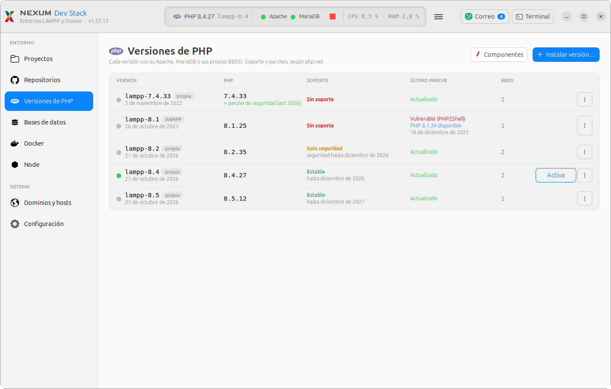
- Instalar versión…Abre la ventana para instalar: la lista de las ramas de PHP con su último parche, un parche concreto («Otro parche concreto…») o un XAMPP oficial para proyectos antiguos. Se explica más abajo.
- ComponentesUna tabla con lo que lleva cada versión: PHP, Apache, MariaDB, FTP, Perl y phpMyAdmin (PMA), con su número. Un phpMyAdmin antiguo sale en rojo. «Cerrar» la cierra.
- La activaEl punto verde marca la versión activa y en marcha. Las demás, en gris.
- Nombre, tipo y fechaLa carpeta de la versión y su tipo: propia (la compila el programa, con componentes al día), XAMPP (un XAMPP oficial) o sobre XAMPP. Debajo, cuándo se publicó ese PHP. Al dejar el ratón encima, su ruta.
- Con parche de seguridadLas versiones sin soporte 7.4.33, 8.0.30 y 8.1.34 se compilan con el arreglo oficial de un fallo grave de seguridad (PHP2Shell). Lo dice en verde: «+ parche de seguridad (oct 2026)».
- SoporteEstable (verde): soporte completo, la mejor para proyectos nuevos. Solo seguridad (ámbar): solo parches de seguridad, para proyectos que aún no funcionan con las estables. Sin soporte (rojo): sin parches, solo para proyectos antiguos. Debajo, hasta cuándo. Los datos son de php.net; mientras llegan, pone «consultando php.net…».
- Vulnerable y parche disponibleEn rojo, «Vulnerable (PHP2Shell)»: esa versión tiene el fallo grave y no lleva el arreglo. Debajo, en azul, «PHP x.y.z disponible» y su fecha, si su rama tiene un parche más nuevo. Las dos se arreglan desde el menú ⋮.
- Último parcheActualizado si tiene el último parche de su rama. Una versión vulnerable nunca sale como actualizada.
- Bases de datosCuántas bases de datos tiene esa versión. Si una versión antigua usa las de otra, pone «→ lampp-…» con la versión dueña.
- Activa / ActivarEn la activa pone «Activa». En las demás, al pasar el ratón por la fila aparece «Activar»: para la de ahora y arranca esa. Si es vulnerable, te avisa antes.
- Más (⋮)Los componentes de esa versión, actualizarla, actualizar su phpMyAdmin si es antiguo y desinstalarla. Cada opción se explica más abajo.
Activar otra versión
- Pasa el ratón por su fila y pulsa «Activar».
- Si es vulnerable, lee el aviso. «lampp-8.1 es vulnerable a PHP2Shell»: una petición preparada puede ejecutar código con tu usuario, y te recomienda actualizarla antes (menú ⋮). Puedes cancelar o pulsar «Activar lampp-8.1 igualmente».
- Escribe la contraseña. El programa para la versión de ahora, cierra lo que quede en memoria, deja todas las versiones solo para este equipo (si no lo consigue, no arranca la nueva) y arranca la nueva. Al acabar: «lampp-8.2 activada».
Instalar una versión nueva
- Pulsa «Instalar versión…» y marca una o varias ramas. Las que ya tienes salen apagadas.
- Pulsa el botón de abajo, que dice cuántas has marcado: «Instalar 1 versión», «Instalar 2 versiones»… (sin ninguna marcada pone «Marca una o más versiones»). Te enseña la lista («Se instala PHP 8.4.27.») y te pide la contraseña de administrador.
- Espera. Cada versión se descarga (comprobando su firma) y se compila: unos minutos. Las que ya tienes no se tocan. Con «Seguir en segundo plano», la tarea sigue mientras usas el resto de la ventana.
- Actívala si quieres. Si has instalado una sola, al acabar la ventana de la tarea te ofrece «Activar lampp-…».
La ventana «Instalar versión»
Se abre aparte y puedes seguir usando la ventana principal mientras la tienes abierta. Ciérrala con su ✕.
- «Instalar nuevas versiones de PHP»: una fila por rama (pulsa el título para plegar o desplegar la lista; al lado, cuántas
versiones nuevas hay). Cada fila dice el último parche («PHP 8.4.27»), con su fecha y si es un «Parche de seguridad» o una
«Corrección de errores»; lo que lleva («Apache 2.4 · MariaDB … · Perl …»); dónde se instala (
→ /opt/lampp-8.4), y su soporte. Las que no se pueden marcar dicen por qué: «Ya instalada en /opt/lampp-…» o «Ya existe /opt/lampp-…». - «Otro parche concreto…»: una versión anterior de cualquier rama, en su propia carpeta (
/opt/lampp-8.3.10, por ejemplo). Abre «Otro parche de PHP»: elige la «Rama:» y sale la lista de sus parches, el primero marcado «Último». Elige uno y pulsa «Añadir» (o haz doble clic). El último no se añade aquí: «Es la última: márcala en la lista principal». Ten en cuenta que los parches anteriores al último no tienen sus correcciones de seguridad: úsalos solo si un proyecto necesita esa versión. Lo que añades sale marcado en la lista, con una ✕ para quitarlo. - «XAMPP oficiales»: para proyectos antiguos (PHP 7.1 a 8.1). Despliégalo y marca el que quieras. No se les puede poner el arreglo de PHP2Shell, así que, si puedes, mejor una versión propia.
Si no se puede consultar php.net, sale «No se han podido consultar las versiones» con el motivo y el botón «Reintentar».
Actualizar una versión
Abre el menú ⋮ de la versión. Lo que sale depende de la versión:
- «Actualizar a PHP x.y.z»: su rama tiene un parche más nuevo.
- «Buscar parches nuevos»: todavía no han llegado los datos de php.net, o la versión es vulnerable. Comprueba si hay algo que poner.
- «Actualizar a PHP x.y.z + parche de seguridad»: la versión se pasa a una con el arreglo de PHP2Shell.
Hay dos casos:
- En su carpeta (las que se llaman como su rama, como
lampp-8.4). Primero comprueba en php.net si hay un parche más nuevo. Si ya lo tiene, te dice «lampp-8.4 ya está actualizada». Si hay uno, te pregunta «¿Actualizar lampp-8.4?» con el botón «Actualizar a PHP x.y.z» y la casilla «Guardar antes una copia en ~/nexum-backups», desmarcada (sin ella, avisa en rojo: «Sin copia, si su MariaDB cambia de rama, sus BBDD no se podrán recuperar.»). La versión se rehace con el parche nuevo; la de ahora sigue funcionando mientras se compila (varios minutos). Si no puede consultar php.net, te lo dice («No se ha podido comprobar la versión»). - Al lado (un XAMPP o un parche concreto, como
lampp-8.3.10). Te pregunta «¿Actualizar lampp-8.3.10 a PHP x.y.z?» y te explica lo que va a hacer: instala la nueva en otra carpeta, al lado, y le copia todas sus bases de datos, con sus vínculos a las carpetas de los proyectos. Si ese PHP ya lo tienes instalado en otra carpeta, solo le copia las bases de datos. Si la de antes era la activa, se activa la nueva. La de antes no se toca: cuando compruebes que todo va bien, desinstálala.
Una versión propia con el mismo parche pero sin el arreglo de PHP2Shell (7.4.33, 8.0.30 u 8.1.34) se vuelve a compilar en su propia carpeta, con el arreglo, y su pregunta trae la misma casilla.
Todo esto pide la contraseña de administrador y se hace en una ventana de tarea, con su barra de avance.
El resto del menú ⋮
- «Componentes…»: la tabla de componentes, solo de esa versión.
- «Actualizar phpMyAdmin»: solo sale si su phpMyAdmin tiene fallos de seguridad ya corregidos. No pregunta: descarga el más
nuevo que admite su PHP (comprobando su firma), conserva la configuración y deja el anterior en la carpeta
phpmyadmin.anteriorde la versión. Pide la contraseña. - «Desinstalar…»: mira abajo.
Desinstalar una versión
- Menú ⋮ → «Desinstalar…». Si no se puede, te dice por qué («No se puede desinstalar»): es la versión activa, otras versiones
usan sus bases de datos o tiene una carpeta
htdocspropia que podría tener proyectos. - Lee lo que va a borrar. «¿Desinstalar lampp-8.2?»: la carpeta de la versión y sus bases de datos propias. Tus proyectos y los vhosts no se tocan.
- Decide si guardas sus bases. «Guardar antes una copia de sus BBDD en ~/nexum-backups» viene desmarcado. Márcalo si alguna base no está en otra versión ni en producción. Sin copia, sale en rojo «Sin copia, las BBDD no se podrán recuperar.» y tienes que escribir el nombre de la versión para confirmar.
- Pulsa «Desinstalar» y escribe la contraseña. Si has pedido la copia y no cabe en tu carpeta personal, no se desinstala nada.
Preguntas
¿Por qué no puedo desinstalar la versión activa?
Porque es la que está sirviendo tus proyectos. Activa antes otra y luego desinstala esa. Al desinstalar puedes guardar antes una copia
de sus bases de datos en ~/nexum-backups (marcando su casilla); tus proyectos y los vhosts no se tocan.
Un XAMPP sale «Vulnerable». ¿Qué hago?
Los XAMPP oficiales no se pueden arreglar. En su menú ⋮, «Actualizar a PHP x.y.z + parche de seguridad» instala al lado una versión propia de esa rama con el arreglo, le copia tus bases de datos y, si era la activa, la activa. Cuando compruebes que todo va bien, desinstala el XAMPP.
¿Qué es «sobre XAMPP» o «→ lampp-…» en la columna de bases de datos?
Son versiones de antes, montadas sobre un XAMPP. Algunas usan las bases de datos de otra versión: entonces, en lugar del número, pone a qué versión pertenecen. No se puede desinstalar la dueña mientras otra use sus bases de datos.
Bases de datos
Las bases de datos de cada versión de PHP: cuánto ocupan, cuándo cambiaron y de qué proyecto son. Aquí se crean,
se cargan desde una copia .sql, se copian a otra versión, se descargan y se borran.
Cada versión de PHP tiene su propio MariaDB, con sus propias bases de datos. Lo que hagas en una no cambia las de las demás.
No se muestran las bases del sistema (mysql, phpmyadmin…).
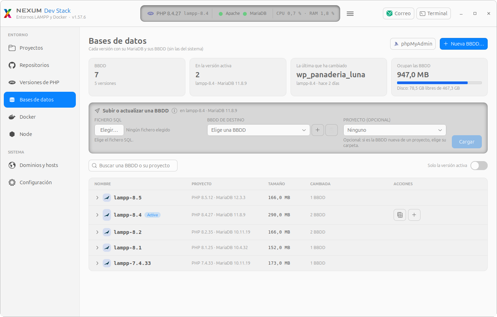
- phpMyAdminAbre phpMyAdmin de la versión activa en el navegador. Solo funciona con la versión activa en marcha.
- Nueva BBDD…Crea una base de datos vacía en la versión activa. No pide la contraseña de administrador.
- Cuántas hay«BBDD»: el total de bases de datos y en cuántas versiones están. «En la versión activa»: cuántas tiene la activa, con su MariaDB.
- La última que ha cambiadoLa base de datos que se cambió la última, en qué versión está y hace cuánto.
- Ocupan las BBDDLo que ocupan las bases de todas las versiones y, en la barra, el espacio libre del disco. Cada versión se mide cuando está activa y en marcha. Si falta alguna por medir, pasa el ratón por encima y te dice cuántas.
- Subir o actualizar una BBDDCarga una copia
.sql,.sql.gzo.zipen la versión activa. Antes borra todas las tablas de la base de destino (si quieres, guardando una copia en~/nexum-backups). Al lado dice en qué versión se carga. - Elegir…Elige el fichero. Si se llama como una base de datos de la versión activa
(
wp_panaderia_luna.sql→wp_panaderia_luna), te la propone como destino. - Lo que faltaDebajo del fichero te dice qué falta para poder cargar: el fichero, la base de destino o arrancar la versión activa.
- BBDD de destinoLa base de datos de la versión activa donde se carga la copia.
- +Crea una base de datos nueva («Crear una BBDD nueva»). Al crearla, queda elegida como destino.
- PapeleraBorra la base de datos elegida como destino («Borrar la BBDD elegida»). Antes te pregunta, y guarda una copia si la pides.
- Proyecto (opcional)Si es la base de datos nueva de un proyecto, elige su carpeta: se ajusta su configuración para usarla. Debajo te dice qué se va a cambiar.
- CargarSe puede pulsar cuando está todo elegido. Antes de hacer nada te enseña lo que va a pasar.
- Buscar una BBDD o su proyectoPor el nombre de la base o de su proyecto. Las versiones que la tienen se despliegan solas.
- Solo la versión activaOculta las demás versiones.
- Cada versiónPulsa la fila para ver sus bases de datos; vuelve a pulsarla para plegarla. Solo hay una desplegada a la vez.
- ActivaLa versión de PHP que está activa ahora. Crear, cargar y borrar se hacen siempre en ella.
- Su PHP y su MariaDBLas versiones de PHP y de MariaDB de esa versión.
- TamañoLo que ocupan sus bases de datos. «—» si aún no se ha medido.
- Cuántas tieneEl número de bases de datos. Si una versión usa las de otra, dice «usa las de lampp-…» y no tiene filas propias.
- phpMyAdmin de la activaSolo en la fila de la versión activa: «Abrir phpMyAdmin» (con la versión en marcha).
- Crear aquíSolo en la fila de la versión activa: «Crear una BBDD vacía aquí», como «Nueva BBDD…».
Al desplegar una versión: cada base de datos
Al pulsar una versión aparecen sus bases de datos, una por fila:
- El punto verde: la base de datos que usa el proyecto cargado ahora («La usa el proyecto cargado (…)»). En las demás, el punto se ve apagado.
- El logotipo: de PrestaShop si el nombre empieza por
ps_y de WordPress si empieza porwp_. - Proyecto: la carpeta de su proyecto (la que tiene vinculada o la única cuya configuración la usa). «—» si no se sabe.
- Tamaño: datos e índices, con la fecha de la medida al pasar el ratón. «—» si su versión aún no se ha medido («Se mide con su versión en marcha»).
- Cambiada: la fecha del último cambio de sus tablas o, si la cargaste con el programa, la de la carga, con «· importada».
En «Acciones», cada base de datos tiene estos iconos:
- Vaciar la caché (solo en las de PrestaShop,
ps_…): «Vaciar la caché de …». Vacía la carpetavar/cachede la tienda. El programa tiene que saber cuál es su carpeta; si no lo sabe, te dice que la cargues una vez con «Cargar proyecto» (así la recuerda). Pide la contraseña de administrador. - Copiar: «Copiar … a otra versión de PHP». Solo aparece si hay otra versión con sus propias bases de datos. Ver Copiar una base a otra versión de PHP.
- Descargar: «Descargar una copia de … (.zip)». Ver Descargar una copia.
- Cargar su proyecto (la carpeta): «Cargar su proyecto (en lampp-…)». Pone su proyecto en
web.localcon esa versión de PHP. Ver Cargar el proyecto de una base. - Borrar (la papelera, solo en la versión activa): «Borrar la BBDD …». Ver Borrar una base de datos.
Vaciar la caché, copiar, descargar y cargar su proyecto funcionan en cualquier versión, también en las que no están activas.
La contraseña de MariaDB
De partida, el usuario root de MariaDB no tiene contraseña y no se te pide nada. Si le has puesto una, al crear, cargar,
borrar o descargar sale el cuadro «Contraseña de MariaDB»: «El usuario root del MariaDB de lampp-… tiene contraseña. Escríbela
para continuar.» Escríbela y pulsa «Continuar». Si te equivocas, dice «Contraseña incorrecta. Vuelve a intentarlo.». Mientras la
ventana esté abierta, no te la vuelve a pedir para esa versión.
Si no se puede entrar por otra razón, sale «No se puede entrar en MariaDB» con el motivo; por ejemplo, «El MariaDB de lampp-… no está en marcha. Arráncalo en Versiones de PHP.»
root. La contraseña de administrador es la
de tu usuario del equipo: la piden las tareas que cambian algo (cargar, copiar, borrar, vaciar la caché, cargar un proyecto).Crear una base de datos
- Pulsa «Nueva BBDD…», el + de la fila de la versión activa o el + de «BBDD de destino».
- Escribe el nombre. El cuadro «Crear BBDD» dice: «Se crea vacía en el MariaDB de lampp-…, con juego de caracteres utf8mb4
(utf8mb4_general_ci).» Solo letras sin acentos, números,
_y-. - Mira el aviso de debajo. «Ya hay una BBDD con ese nombre.» no te deja seguir (tampoco los nombres del sistema). «Ya existe en lampp-… Si sigues, se crea también en lampp-….» solo te avisa: cada versión tendrá la suya.
- Pulsa «Crear». Dice «BBDD «…» creada» y queda elegida como destino para cargar una copia. No pide la contraseña de administrador.
Cargar una copia de producción
- Pulsa «Elegir…» y busca el fichero (
.sql,.sql.gzo.zip). Empieza en tu carpeta de Descargas. Si la base que se llama como el fichero solo está en otra versión, te lo dice. - Elige la base de destino (o créala con +). Al elegirla, te propone su proyecto si lo sabe.
- Si quieres, elige su proyecto. En un WordPress, su
wp-config.phpse rehace con la plantilla de este equipo para usar esa base. En PrestaShop, suparameters.php(osettings.inc.php) pasa a usarla y se vacía su caché. En otros proyectos, la base queda asociada a la carpeta (Cargar proyecto la usa). - Pulsa «Cargar». El aviso «¿Cargar … en …?» te recuerda que se BORRAN todas sus tablas y trae la casilla «Guardar antes una copia en ~/nexum-backups», desmarcada. Sin ella, avisa en rojo: «Sin copia, lo que se sustituya no se podrá recuperar.» Márcala si la base tiene algo que no esté en el fichero que cargas, como cambios hechos en local. Confirma con «Vaciar y cargar». Si root de MariaDB tiene contraseña, te la pide; después, la de administrador.
- Espera. Una barra enseña el avance. Al acabar dice «BBDD «…» cargada».
Si esa base de datos ya existe en otra versión, el aviso es distinto: ««…» ya existe en lampp-…». Te pregunta si quieres meterla también en la versión activa; la de la otra versión no se toca. El botón es «Cargar también en lampp-…».
Al cargar, además:
- La copia de antes: si la has pedido y la base tenía tablas, se guarda en
~/nexum-backups/lampp-<versión>-<base>-antes-de-cargar-<fecha>.sql.gz. Si no se puede guardar, no se cambia nada. - El fichero se comprueba antes de vaciar la base: si no es un
.zipo.gzválido, no se toca nada. - El administrador de pruebas: en un WordPress o una tienda PrestaShop se crea o se deja al día el usuario
local@local.testcon la contraseñalocal, para el botón «Panel». - El correo: lo que mande la web va al correo de pruebas (Mailpit), no a gente de verdad.
~/nexum-backups, si la guardaste.Copiar una base a otra versión de PHP
- Despliega la versión donde está y pulsa el icono de copiar de la base.
- Elige la versión de destino en «Copiar BBDD» («¿A qué versión de PHP copias …?»). Se copia con el mismo nombre. Si una ya la tiene, lo dice: «ya la tiene: se sustituye». Pulsa «Copiar».
- Confirma. «¿Copiar … a lampp-…?» (botón «Copiar a lampp-…») o, si ya la tiene, «¿Sustituir … en lampp-…?» (botón «Sustituir en lampp-…», con la casilla «Guardar antes una copia en ~/nexum-backups», desmarcada). Pide la contraseña de administrador.
- Listo. Dice «… copiada a lampp-…». La de origen no se toca.
- Si el destino no es la versión activa, se arranca su MariaDB solo para la copia, sin red, y se para al acabar.
- Si el destino ya la tenía, lo que tuviera se pierde. Si marcas la casilla, antes se guarda una copia suya en
~/nexum-backups/lampp-<destino>-<base>-antes-de-copiar-<fecha>.sql.gz; sin ella, avisa en rojo: «Sin copia, lo que se sustituya no se podrá recuperar.» - Con otro nombre o con otra carpeta de proyecto: usa, en Proyectos, el + de «Entorno» → «En otra versión de PHP (copiar su BBDD)…».
Descargar una copia
- Pulsa el icono de descargar de la base.
- Elige dónde guardarla. El cuadro «Descargar la BBDD …» propone tu carpeta de Descargas y un nombre como
wp_panaderia_luna-lampp-8.4-20261110-1030.zip. Puede acabar en.zip,.sqlo.sql.gz; con otra terminación se le añade.zip. Si ya existe, te pregunta antes de sobrescribirlo. - Pulsa «Descargar». Al acabar dice «Copia de «…» guardada: …» y te ofrece «Abrir la carpeta».
- Si su versión no está en marcha, el cuadro te avisa: se arranca un MariaDB temporal solo para la copia y pide la contraseña de administrador. Si está en marcha, no la pide.
- Qué lleva: las tablas, los datos, las funciones y los disparadores, sin los eventos. Se puede volver a cargar aquí mismo.
- Qué no lleva: el administrador de pruebas (
local@local.test) ni los cambios del correo de pruebas. La copia lleva el correo como estaba antes. - Si la cancelas («¿Cancelar la descarga?»), no se guarda nada.
Cargar el proyecto de una base
El icono de la carpeta pone el proyecto de esa base de datos en web.local, con la versión de PHP de la fila.
- Si el programa sabe cuál es su carpeta (la tiene vinculada, o solo una carpeta usa esa base), lo carga sin preguntar.
- Si no lo sabe, sale «Cargar proyecto» con el título «Proyecto de …»: elige la carpeta en la lista (con el buscador «Buscar una carpeta de htdocs»; arriba salen las que usan esa base) y pulsa «Cargar proyecto». La elección se recuerda para esa base.
- Si la base es de otra versión, te pregunta «¿Cambiar a PHP …?»: se para la versión activa y se activa la de la base. El botón es «Cargar <carpeta>».
- Si aún no hay un vhost para cargar proyectos, te pregunta «¿Crear web.local?»: se crea, con http y https, su certificado y su
línea en
/etc/hosts. - Pide la contraseña de administrador. Si la cancelas, no se cambia nada y sigue cargado el proyecto de antes.
- Al acabar dice «Proyecto cargado: web.local → … (PHP …)». En una tienda PrestaShop añade que su dominio ha quedado falseado (lo ves en Dominios y hosts).
Borrar una base de datos
- Pulsa la papelera de la base (solo en la versión activa) o la de «BBDD de destino».
- Lee el aviso. «¿Borrar la BBDD «…»?» dice cuántas tablas tiene y cuánto ocupa. No se puede deshacer.
- Decide si guardas una copia. «Guardar antes una copia en ~/nexum-backups (se puede volver a cargar)» viene desmarcada. Márcala si la base no está en producción ni en otra versión. Sin copia, sale en rojo «Sin copia, el contenido no se podrá recuperar.» y tienes que escribir el nombre de la base para confirmar.
- Pulsa «Borrar la BBDD». Pide la contraseña de administrador. Al acabar dice «BBDD «…» borrada» (con «(copia en ~/nexum-backups)» si la has guardado).
La copia se llama ~/nexum-backups/lampp-<versión>-<base>-<fecha>.sql.gz. Si la has pedido y no se puede
guardar, no se borra nada. Una base vacía (sin tablas) se borra sin copia.
Preguntas
¿Por qué sale «—» en el tamaño?
Cada versión solo se puede medir cuando está activa y en marcha. Actívala un momento y verás sus tamaños; después se recuerdan.
¿Puedo crear o borrar bases en una versión que no es la activa?
No: crear, cargar y borrar se hacen siempre en la activa. En las demás puedes copiar, descargar, cargar su proyecto y vaciar la caché de una tienda.
He cargado una copia encima de la buena. ¿Puedo volver atrás?
Sí, si marcaste «Guardar antes una copia en ~/nexum-backups» al cargarla: la base tal como estaba está en
~/nexum-backups, con la fecha en el nombre. Cárgala igual que cualquier otra copia. Sin esa casilla, solo queda volver a
cargar el volcado de producción.
¿Por qué una versión dice «usa las de lampp-…»?
Porque comparte las bases de datos de otra versión. Sus bases salen en la fila de esa otra versión.
¿Qué usuario y contraseña pongo en el panel de mi WordPress o mi tienda?
local@local.test con la contraseña local. Se crea solo al cargar una copia. El botón «Panel» del proyecto entra
con él sin que lo escribas.
Docker
Tus proyectos en contenedores, cada uno con su propia versión de PHP y su propia dirección, a la vez que los de LAMPP. Sin escribir comandos.
Docker funciona sin root, con tu usuario: ni un proyecto ni Docker pueden hacerse administradores del equipo. Los
proyectos los sirve el Apache de Docker (sin necesidad de LAMPP), con las mismas reglas de seguridad y los .htaccess
de cada proyecto. Las bases de datos van en una MariaDB común por versión, o, en WordPress, puedes usar en vivo la de una
versión LAMPP.
Cada proyecto tiene su dirección https://…. De partida acaban en .docker.local (por ejemplo,
https://academia-flor-php84.docker.local) y phpMyAdmin está en https://pma.docker.local. Si activas el DNS en
Configuración → Docker, pasan a acabar en .docker.test, como en la captura.
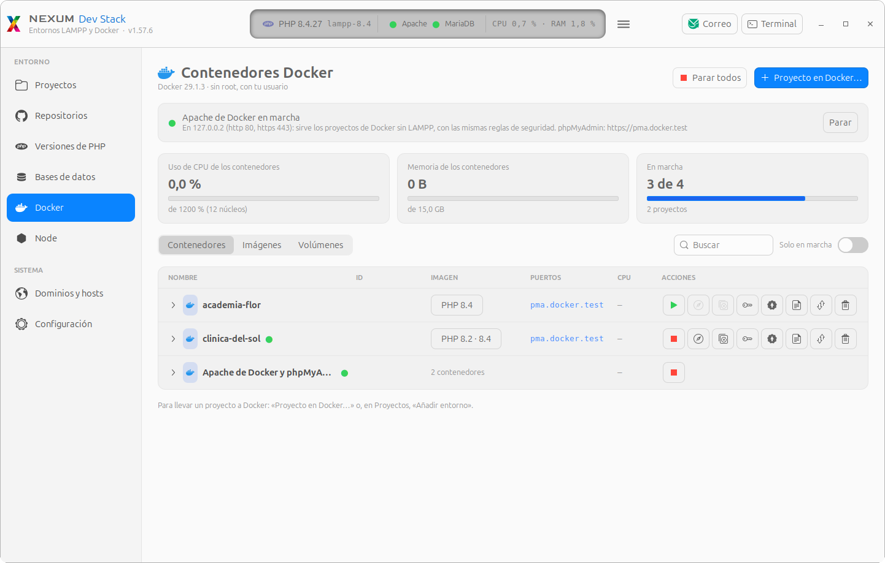
- Su versión de DockerLa versión de Docker que usa el programa y cómo funciona.
- Parar todosPara todos los contenedores de Nexum en marcha: proyectos, MariaDB comunes, el Apache de Docker, phpMyAdmin y los puentes a LAMPP. Los de otros programas no se tocan. No pregunta antes y pide la contraseña de administrador.
- Proyecto en Docker…Monta en Docker una carpeta de tus proyectos: eliges su versión de PHP, su MariaDB y, si quieres, la base de datos de LAMPP que se le copia.
- El Apache de DockerSi está en marcha, en qué dirección y puertos, y dónde está su phpMyAdmin. Solo sale si tienes algún proyecto con el Apache de Docker.
- Parar / ArrancarPara o arranca el Apache de Docker. Este botón no avisa si hay proyectos usándolo: al pararlo, dejan de verse.
- ConsumoLo que gastan los contenedores de procesador y de memoria, y cuántos hay en marcha. Se actualiza cada 20 segundos, con la ventana delante y esta página abierta.
- ContenedoresTus proyectos en Docker y lo común, con sus contenedores. Es la vista de la captura.
- ImágenesLas imágenes descargadas: volver a descargarlas o borrar las que no usa nadie.
- VolúmenesDonde se guardan los datos, como los de las bases de datos. Se pueden borrar los que no usa nadie.
- BuscarFiltra la lista por nombre.
- Solo en marchaDeja solo lo que está funcionando.
- Cada proyectoPulsa la fila para desplegarlo: verás su visor (con sus accesos directos) y cada uno de sus contenedores. Vuelve a pulsarla para plegarlo. Solo hay uno desplegado a la vez.
- El punto verdeTodos sus contenedores están en marcha.
- Su botón de PHPCon qué versiones de PHP funciona. Púlsalo para añadir, quitar o elegir versiones. En WordPress puedes tener varias a la vez, cada una con su dirección.
- PuertosDónde está su phpMyAdmin.
- CPULo que gastan sus contenedores de procesador.
- Arrancar o parar«Arrancar todos sus servicios» o «Parar todos sus servicios». Siguen en marcha aunque cierres la ventana, y nada arranca solo al encender el equipo.
- AbrirAbre su web por
https://. Solo con el proyecto en marcha. - phpMyAdminAbre su phpMyAdmin. Entra con el usuario
rooty la contraseña que copia la llave. Solo con el proyecto en marcha. - La llaveCopia la contraseña de
rootde su base de datos, para entrar en phpMyAdmin. - Actualizar la imagenPone su PHP al día con lo último de Docker Hub (parches de seguridad). La base de datos y la configuración no cambian. Antes te pregunta.
- RegistrosLo último que han dicho sus contenedores (200 líneas): para ver por qué algo no arranca.
- Qué base de datos usaSolo WordPress con el Apache de Docker: su copia en la MariaDB de Docker
o, en vivo, la de una versión LAMPP (la misma que
web.local, sin copias). - Eliminar de DockerBorra sus contenedores y su base de datos de Docker, sin guardar copia. Tu carpeta y las bases de LAMPP no se tocan. Antes te pregunta.
- Lo comúnEl Apache de Docker y phpMyAdmin, las MariaDB comunes y los puentes a LAMPP, cada uno con su fila.
- Arrancar o parar lo comúnSi lo paras mientras lo usa algún proyecto en marcha, antes te dice cuáles y te pregunta.
- Otras formas de llevar un proyectoCon «Proyecto en Docker…» o, en Proyectos, con «Añadir entorno».
Si Docker aún no está listo
Mientras lo comprueba, la página dice «Comprobando Docker…». Si no está listo, en lugar de la lista verás una de estas filas:
- «Docker no está instalado», con el botón «Instalar Docker». Se instala el Docker de Ubuntu en modo sin root (el Docker del sistema, con root, se deja apagado). Pide la contraseña de administrador.
- «Docker sin root no responde», con el botón «Prepararlo». Está instalado, pero su servicio (el de tu usuario) no está en marcha o no se ha preparado. Prepararlo lo deja listo; no cambia los contenedores.
Desde Proyectos pasa lo mismo: si pulsas Docker sin tenerlo listo, te pregunta «Docker no está instalado» (botón «Instalar Docker») o «Docker está apagado» (botón «Arrancar Docker»).
Avisos de arriba
- «Hay otro Docker en marcha: el de Ubuntu, como administrador», con el botón «Apagarlo». Este programa usa el suyo, con tu usuario: el de Ubuntu no hace falta y quien lo use puede hacerse con el equipo. Apágalo salvo que lo uses fuera de este programa. Pide la contraseña; tus proyectos no se tocan.
- «La versión LAMPP activa está parada», con el botón «Arrancarla». Solo sale si tienes algún proyecto en Docker de antes (de los que se abren por el Apache de LAMPP). Los del Apache de Docker no lo necesitan.
- «Docker sin root aún no puede usar los puertos 80 y 443», con el botón «Permitir». Los puertos de menos de 1024 son de root: se permite una vez y pide la contraseña de administrador. O elige otros puertos en Configuración.
Al desplegar un proyecto: su visor
Arriba de sus contenedores sale su visor, como el del proyecto cargado en Proyectos. Enseña su logotipo, su nombre, si es WordPress o PrestaShop, sus versiones de PHP, su base de datos (la MariaDB común o «BBDD de lampp-… en vivo (la de web.local)»), su dirección y si está «En marcha», «A medias» o «Parado». Sus botones:
- «Abrir web»: abre su web. En un WordPress con varias versiones de PHP es un menú: eliges cuál abrir.
- «Compartir»: abre un túnel de Cloudflare para que otra persona vea la web (ver Compartir una web). Si ya la estás compartiendo, dice «Compartiendo» y enseña la dirección y la contraseña.
- «Panel»: abre el panel de WordPress o de PrestaShop ya con la sesión iniciada. Antes crea o deja al día en su base de datos
el administrador de pruebas,
local@local.testcon la contraseñalocal. Si el proyecto no tiene panel, no se puede pulsar. - «phpMyAdmin»: copia la contraseña de
rooty abre phpMyAdmin. Pega la contraseña con el usuarioroot. - «VS Code»: abre la carpeta en Visual Studio Code (si lo tienes instalado).
- «Log»: los últimos errores de PHP de la web, en una ventana con «Copiar todo» y «Actualizar». Solo con su contenedor de PHP en marcha.
- «Importar» (WordPress y PrestaShop): «Importar imágenes de producción».
- «Versiones de PHP…» (los del Apache de Docker) o «Pasar al Apache de Docker» (los de antes).
- «Arrancar» o «Parar»: todos sus contenedores.
Con el proyecto parado, casi todos se ven apagados («Está parado: arráncalo antes»). Qué botones se ven y en qué orden lo eliges en Configuración, en «Botones del proyecto»; «Versiones de PHP…» (o «Pasar») y «Arrancar»/«Parar» se ven siempre.
Al desplegar un proyecto: sus contenedores
Debajo del visor sale cada contenedor, con su nombre corto (db-1, php84…), su ID, su imagen, sus puertos y su
CPU. Al pasar el ratón por el nombre ves el nombre completo y desde cuándo está en marcha. Sus botones:
- «Arrancar» o «Parar»: solo ese contenedor. Si es común y lo usa algún proyecto, antes te pregunta.
- «Reiniciar»: solo con el contenedor en marcha.
- «Registros»: sus últimas 200 líneas.
- «Eliminar este contenedor»: te pregunta «¿Eliminar el contenedor …?». Se vuelve a crear al arrancar el proyecto y los datos de la base siguen en su volumen. Para quitar el proyecto entero, usa la papelera de su fila.
Todos piden la contraseña de administrador. Los contenedores de otros programas salen en la lista, pero con los botones apagados.
Lo común
- «Apache de Docker y phpMyAdmin»: sirve todos los proyectos del Apache de Docker. Si lo paras, dejan de verse; al arrancar uno de ellos, se arranca solo.
- «MariaDB … (común)»: las bases de datos de los proyectos que van con esa versión de MariaDB. Si la paras, se quedan sin base de datos.
- «Puente a la BBDD de lampp-… (en vivo)»: conecta Docker a la MariaDB de esa versión LAMPP, para los WordPress que la usan en vivo. Si lo paras, se quedan sin base de datos.
Si paras algo común que usa un proyecto en marcha, te avisa: «¿Parar …?», con los proyectos que lo usan. Confirma con «Pararlo igualmente» o «Pararla igualmente».
Las pestañas Imágenes y Volúmenes
Imágenes: cada imagen con su nombre, su etiqueta, su ID, su tamaño y cuándo se creó. Sus botones:
- «Volver a descargar de Docker Hub». No se puede con las imágenes de PHP del programa (
nexum-…: «Se rehace con «Actualizar imagen»») ni con las que no tienen etiqueta. - «Borrar la imagen»: te pregunta «¿Borrar la imagen …?», con lo que ocupa. Si hace falta, se vuelve a descargar o a preparar. No se puede si la usa un contenedor, aunque esté parado («La usa un contenedor: bórralo antes»).
Volúmenes: cada volumen con su driver y de qué proyecto es (por ejemplo, «academia-flor (BBDD)»). Su botón:
- «Borrar el volumen»: te pregunta «¿Borrar el volumen …?». Se pierden sus datos y no se puede deshacer. No se puede si lo usa un contenedor («Lo usa un contenedor: bórralo antes»).
Descargar y borrar piden la contraseña de administrador.
Montar un proyecto en Docker
- Pulsa «Proyecto en Docker…». Se abre el cuadro «Proyecto en Docker».
- Elige la carpeta. Solo salen las que aún no están en Docker.
- Elige su versión de PHP y la de MariaDB.
- Elige la base de datos que se copia («BBDD que se copia»): «— Ninguna: vacía —» o una de LAMPP, como
«wp_panaderia_luna (lampp-8.4)». Se copia a Docker; la de LAMPP no se toca. Su
wp-config.php(o la configuración de PrestaShop) se cambia solo dentro del contenedor: el de tu carpeta no cambia y la puedes seguir usando con LAMPP. - Mira el dominio. Sale solo, según la carpeta y la versión de PHP.
- Pulsa «Crear en Docker». Te pregunta «¿Crear … en Docker?», con la dirección que tendrá. La primera vez con cada PHP se prepara su imagen, unos minutos. Al acabar te da su dirección.
web.local, móntalo desde Proyectos: el botón «Docker» del proyecto cargado, o el menú
⋮ de su fila → «Añadir entorno en Docker…». Ese cuadro, «Montar … en Docker», tiene la opción «Cómo»: «En vivo: la misma que web.local (sin copias)» o
«Una copia en Docker». También puedes cambiarlo después con el icono «Qué base de datos usa».Probarlo con otra versión de PHP
- Pulsa su botón de PHP (en la fila) o «Versiones de PHP…» en su visor. Se abre «Versiones de PHP de …».
- En «Añadir otra», elige la versión y pulsa «Añadir». La primera vez se prepara su imagen (unos minutos).
- Para quitar una, pulsa su papelera («Quitar PHP …»). Se quitan su contenedor y su dirección; la carpeta y la base se quedan. La última no se puede quitar: para eso, elimina el proyecto de Docker.
- Pulsa «Cerrar» cuando acabes.
- En WordPress van todas a la vez, cada una con su dirección (
academia-flor-php83…,academia-flor-php84…), con la misma carpeta y la misma base de datos. - En una tienda PrestaShop hay una sola dirección, porque la tienda guarda su dominio en la base de datos. Va con la versión que elijas: pulsa «Elegir» en otra versión y la dirección pasa a ella. La que añades pasa a ser la elegida.
Proyectos de antes: «Cambiar PHP» y «Pasar al Apache de Docker»
Los proyectos que montaste en Docker con versiones anteriores del programa se abren por el Apache de LAMPP y tienen una sola versión de PHP. En ellos:
- El botón de PHP abre «Cambiar PHP»: «¿Con qué versión de PHP quieres …?». Solo se cambia su contenedor de PHP; su base de datos, su phpMyAdmin y su configuración se quedan como están. Elige la versión y pulsa «Cambiar». Si no arranca, vuelve a la de antes.
- La flecha hacia arriba («Pasarlo al Apache de Docker») y el botón «Pasar al Apache de Docker» del visor lo pasan al sistema
nuevo. Te pregunta «¿Pasar … al Apache de Docker?», con la casilla «Guardar antes una copia en
~/nexum-backups», desmarcada (sin ella, avisa en rojo: «Sin copia, su BBDD de ahora no se podrá recuperar.»). Su base se carga en la
MariaDB común: con la casilla, a través de una copia que se queda en
~/nexum-backups/docker-<proyecto>-<base>-<fecha>.sql.gz; sin ella, de un fichero temporal que se borra al acabar. Después quita sus contenedores de antes, su vhost de LAMPP y su línea de/etc/hosts. Pulsa «Pasarlo»; pide la contraseña de administrador. Ya no necesitará LAMPP y podrás añadirle más versiones de PHP.
Qué base de datos usa un WordPress
- Pulsa el icono de las flechas («BBDD: la de LAMPP en vivo (la misma que web.local) o su copia de Docker»).
- Elige «En vivo: la de lampp-… (la de web.local)» o «Su copia en la MariaDB común de Docker».
- Pulsa «Usarla». Si el proyecto estaba en marcha, se arranca de nuevo con la base elegida.
En vivo, lo que cambies en Docker se ve en web.local y al revés. Si la MariaDB de esa versión no está en marcha, se arranca
solo ella (pide la contraseña). La copia de Docker no se borra: puedes volver a ella. Solo WordPress: una tienda guarda su dominio en la
base y no puede servir a dos sitios a la vez.
Actualizar la imagen de PHP
El icono de actualizar te pregunta «¿Actualizar la imagen de PHP …?»: se rehace con los últimos parches de Docker Hub y se vuelve a crear su contenedor de PHP. Pulsa «Actualizar la imagen». Su base de datos y su configuración no cambian. En un proyecto del Apache de Docker se rehacen las imágenes de todas sus versiones de PHP. Si falla, sigue con la imagen de antes.
Eliminar un proyecto de Docker
La papelera de la fila te pregunta «¿Borrar … de Docker?». Se borran sus contenedores, su base de datos de Docker y su vhost, y sus
direcciones dejan de estar en /etc/hosts. Pulsa «Borrar de Docker».
Preguntas
¿Se paran solos si no los uso?
Sí. En Configuración → Docker, «Parar los proyectos sin visitas»: nunca, a la hora o a las horas que elijas (3, si no cambias nada). Se mira cada 15 minutos, también con la ventana cerrada, y se para también lo común que ya no use nadie.
¿Por qué me pide la contraseña si Docker va sin root?
Las tareas de la ventana que cambian algo la piden al empezar, como en el resto del programa. Si la cancelas, no se ha hecho nada. Los «Registros» de un proyecto y el «Log» de su visor no la piden.
¿Qué usuario y contraseña pongo en phpMyAdmin?
El usuario es root, y la contraseña la copia la llave del proyecto (o el botón «phpMyAdmin» de su visor, que además lo
abre). En los del Apache de Docker es la de su MariaDB común.
¿Qué usuario y contraseña pongo en el panel de WordPress o de la tienda?
No hace falta: el botón «Panel» del visor entra solo con local@local.test y la contraseña local.
¿Por qué en la captura las direcciones acaban en .docker.test?
Porque ese equipo tiene activado el DNS de Docker en Configuración. De partida acaban en .docker.local.
Node.js
Tus proyectos hechos con Astro, Next, Nuxt, SvelteKit o Vite, cada uno con su servidor en tu equipo y con la versión de Node que pide.
Salen las carpetas de tus proyectos con un package.json que usan uno de esos programas o tienen un script
dev o start. No salen las que tienen wp-config.php, index.php o artisan:
son webs de PHP que usan npm solo para sus estilos. La versión de Node se lee de su .nvmrc, .node-version o
engines; si no la tienes, se descarga de nodejs.org, comprobada. Si el proyecto no pide ninguna, se usa Node 26.
Arrancar, compilar, parar y ver el registro no piden la contraseña de administrador. El «Túnel» sí la pide, como «Compartir» en las demás páginas. Si no hay ningún proyecto de Node, la página dice «Ningún proyecto de Node».
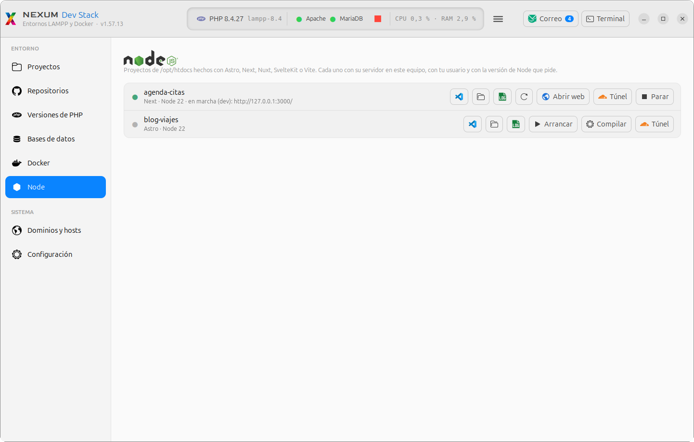
- En marcha o paradoVerde si su servidor está funcionando; gris si está parado.
- Qué es y dónde estáSu tipo (Next, Astro…), la versión de Node que pide y, en marcha, en qué modo
(«desarrollo» o «compilado») y en qué dirección (
http://127.0.0.1:…). Si le faltan las dependencias, lo dice: se instalan al arrancar. - VS Code y su carpeta«Abrir en Visual Studio Code» (solo si lo tienes instalado) y «Abrir su carpeta» en el explorador de archivos.
- Registro«Lo último que ha dicho su servidor»: sus últimas 300 líneas, en una ventana. Es el primer sitio donde mirar si algo falla. Si aún no ha arrancado desde aquí, lo dice.
- ReiniciarSolo en marcha. «Reiniciar su servidor» lo para y lo vuelve a arrancar; si va compilado, «Volver a compilar y arrancar» lo compila otra vez.
- Abrir webSolo en marcha: abre su dirección en el navegador.
- ArrancarSolo parado. En modo desarrollo: los cambios se ven al momento. Prepara Node, instala las dependencias si faltan y arranca su servidor.
- CompilarSolo parado. Lo compila y lo arranca como en producción, para ver cómo quedará de verdad.
- TúnelLo comparte por internet con una dirección temporal y contraseña (como «Compartir» en Proyectos). Solo se comparte compilado: si está en desarrollo, te pregunta antes de compilarlo; si está parado, lo compila y lo arranca sin preguntar. Mientras lo compartes, el botón dice «Compartiendo», en verde, y enseña la dirección y la contraseña.
- PararSolo en marcha. Para su servidor y, si lo estabas compartiendo, también el túnel.
Arrancar un proyecto
- Pulsa «Arrancar» para trabajar en él (los cambios se ven al momento) o «Compilar» para verlo como en producción.
- Espera a que acabe la tarea. Sus pasos: preparar Node (lo descarga si no lo tienes), instalar las dependencias (con
npm,pnpmoyarn, según el fichero de bloqueo del proyecto), compilarlo si toca y arrancar su servidor. - Pulsa «Abrir web». Cada proyecto va en tu equipo, en
http://127.0.0.1y un puerto libre entre el 4321 y el 4399.
Compartir un proyecto de Node
- Pulsa «Túnel». Si está en desarrollo, te pregunta «¿Compilar … para compartirlo?»: «Está en desarrollo, y lo que se comparte es la versión compilada. Se para y arranca compilado: los cambios ya no se verán al momento.» Pulsa «Compilar y compartir».
- Elige cuánto dura y si se bloquea el panel en el diálogo «Compartir» y pulsa «Compartir». Pide la contraseña de administrador. Lo explica entero Compartir una web.
Preguntas
¿Sigue en marcha si cierro la ventana?
Sí: cada servidor va por su cuenta. Páralo desde aquí cuando acabes.
¿Por qué el túnel compila el proyecto?
Para no sacar de tu equipo el código fuente: lo que se comparte es la versión compilada, como la vería el cliente en producción.
«Compilar» dice que no tiene un script start
Si el proyecto no es Astro, Next, Nuxt, SvelteKit ni Vite, para servirlo compilado necesita un script start en su
package.json. En desarrollo usa su script dev (o start).
Mi Astro usa el adaptador de Vercel, Netlify o Cloudflare
Así no se puede servir en tu equipo: se compila con el adaptador de Node, sin tocar su configuración ni su package.json.
Con pnpm o yarn, añade antes @astrojs/node a sus dependencias.
Dominios y hosts
Prueba una web con su dominio de verdad, en tu equipo: el navegador abre mitienda.com y lo que ves es tu
copia local, con HTTPS de confianza.
Eso es falsear un dominio: una línea en el fichero de hosts del sistema (/etc/hosts) hace que ese dominio lleve a
tu equipo en vez de a internet. Al dejar de falsearlo, vuelve a llevar a la web real. Cada cambio pide la contraseña de administrador
y, con las copias de los ficheros que cambia el programa encendidas, antes guarda una copia del fichero en
~/nexum-backups.
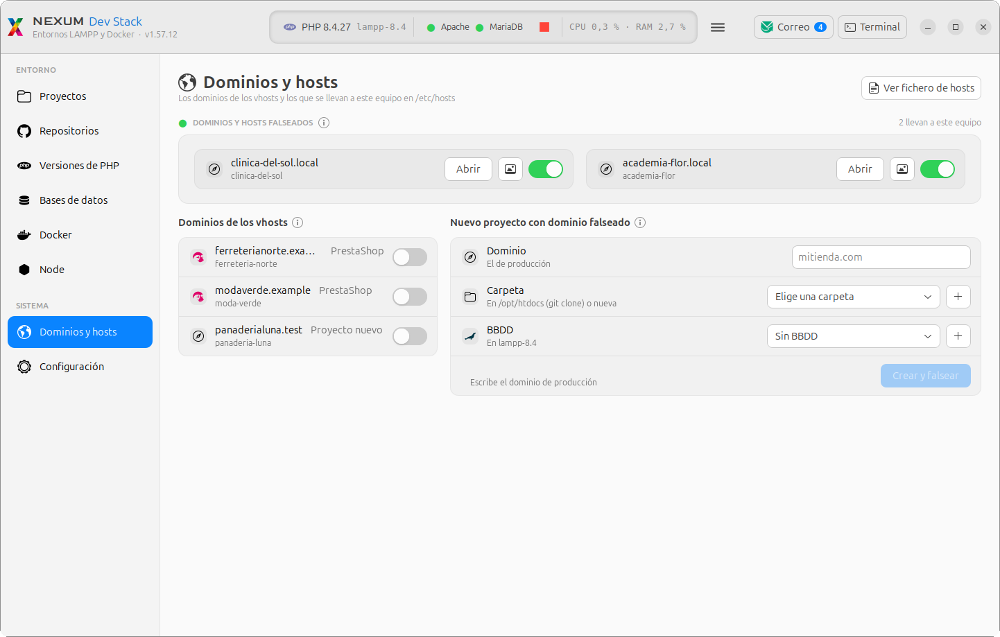
- Ver fichero de hostsArriba, qué dominios se pueden falsear y cómo está cada uno («falseado» o
«sin falsear»; los
.local, «encendido» o «apagado»), con su carpeta; debajo, el contenido entero del fichero. Solo para leer, con «Copiar todo» y «Actualizar». Para editarlo a mano: menú ☰ → «Editar /etc/hosts», o Configuración → Vhosts y hosts. - Host falseadoLos dominios que ahora llevan a tu equipo, cada uno con su botón «Abrir». Si no hay ninguno, dice «Ningún dominio falseado»: todos llevan a su web real.
- Nuevo proyecto con dominio falseadoPara empezar en local un proyecto con su dominio de producción, sin tocar nada en producción. Al acabarlo, se exporta a producción tal cual.
- DominioEl de producción. Si pegas una dirección entera, se queda solo con el nombre.
- CarpetaLa del proyecto en
/opt/htdocshtdocs(por ejemplo, la de ungit clone). Si ya tiene un dominio, lo dice debajo. Si ya trae su configuración, te propone su base de datos («BBDD de su configuración: …»). - Carpeta nueva (+)Pide su nombre (letras sin acentos, números, punto, _ y -); si lo dejas vacío, se llama como el dominio. Se crea al pulsar «Crear y falsear». Si vas a clonar el proyecto con git, clónalo antes y elige su carpeta.
- Base de datos«Sin BBDD» o una de la versión activa. Sin versión activa, no se puede elegir.
- BBDD nueva (+)Pide el nombre de la base de producción (letras sin acentos, números, _ y -). Se crea vacía en la versión activa al pulsar «Crear y falsear». Si ya existe, te dice que la elijas en la lista.
- Crear y falsearTe enseña antes los pasos: crear la carpeta si hace falta, su vhost http y https con certificado, la base de datos, y falsear el dominio (dejando de falsear los demás). Pide la contraseña de administrador. Mientras falta algo, el botón está apagado y a su izquierda dice qué falta.
- Dominios de los vhostsTodos los que tienen vhost, con su carpeta y, si le falta algo, «sin https» o «falta el certificado». «PrestaShop» marca las tiendas.
- Falsear o noEncendido, el dominio lleva a tu equipo; apagado, a la web real. Solo cambia ese
dominio (y su
www). Pide la contraseña de administrador. - Proyecto nuevoMarca los dominios creados aquí con «Crear y falsear». Su dominio queda unido a su carpeta: al cargar el proyecto se vuelve a falsear.
Lo que puede salir en cada dominio
- «Abrir»: solo cuando el dominio lleva a tu equipo. Lo abre en el navegador (con
https://si tiene). - «Imágenes de producción» (un icono de imagen): solo en los dominios
.local. Lo explica la tarea de más abajo. - El interruptor: al pasar el ratón dice «Falsear Host» o «Host falseado» (en un
.local, «Encender este .local» o «Apagar este .local»). Los de los proyectos (web.local) ylocalhostno se pueden cambiar.
Los dominios .local
Un .local solo existe en tu equipo: no hay ninguna web real a la que devolverlo. Por eso no sale en «Host falseado» y va siempre
encendido, con su línea en el fichero de hosts, para que nadie de tu red pueda contestar por él. Sí puedes apagarlo: te pregunta antes
«¿Apagar …?» y te avisa de que, mientras esté apagado, cualquiera de tu misma wifi podría contestar con una web suya. Su línea queda comentada
y la puedes volver a encender cuando quieras. Pide la contraseña de administrador.
Probar una tienda con su dominio real
- Enciende su interruptor en «Dominios de los vhosts» y escribe la contraseña de administrador.
- Ábrela. Sale arriba, en «Host falseado», con su botón «Abrir». El navegador la abre en tu equipo con HTTPS de confianza.
- Al acabar, apágalo. El dominio vuelve a llevar a la tienda de verdad. Cargar otro proyecto también deja de falsearlo.
Empezar un proyecto nuevo con su dominio de producción
- Escribe el dominio en «Dominio», por ejemplo
panaderia-luna.com. - Elige la carpeta en la lista, o crea una con + (en el diálogo «Carpeta nueva», escribe su nombre y pulsa «Elegir»).
- Elige la base de datos: «Sin BBDD», una de la lista, o una nueva con + (diálogo «BBDD nueva», «Elegir»).
- Pulsa «Crear y falsear». Te enseña la lista de lo que va a hacer: la carpeta (y si se crea), el vhost http y https con su certificado autofirmado, la base de datos («se crea vacía» o «ya existe: se deja como está») y el dominio falseado (los demás dejan de estarlo). Pulsa «Crear y falsear» y escribe la contraseña de administrador.
- Al terminar, abajo sale «… falseado: https://… → …». Ya puedes abrirlo con su dominio real.
Ver las imágenes de producción en un .local
Las imágenes y los ficheros subidos (wp-content/uploads o img) no suelen ir en git. En vez de descargarlos, tu
copia local se los puede pedir a la web real.
- Pulsa el icono de imagen de un dominio
.local. Se abre «Imágenes de producción en …». - Escribe el dominio de producción, por ejemplo
mitienda.com(te propone el dominio real del vhost de la misma carpeta). No puede ser un.local. - Pulsa «Guardar». Desde entonces, las imágenes, vídeos y PDF que no estén en la carpeta se piden a la web real con una
redirección; lo que ya tienes en local se sigue sirviendo desde aquí. Se cambian los vhosts: se guarda antes una copia en
~/nexum-backups(con las copias de los ficheros que cambia el programa encendidas), Apache los comprueba y se recarga. Pide la contraseña de administrador. - Para dejarlo, abre el mismo diálogo y pulsa «Quitar» (en rojo; solo sale si ya tiene uno).
Si web.local no lleva a tu equipo
Si en el fichero de hosts el dominio de los proyectos (web.local) no lleva a 127.0.0.1, donde escucha Apache, el
navegador da «No se puede acceder a este sitio web». Entonces sale arriba del todo el aviso «web.local no lleva a este equipo», con lo que
tiene ahora («sin línea en /etc/hosts» o la dirección a la que apunta).
- Pulsa «Arreglarlo».
- Escribe la contraseña de administrador. Se quita
web.localde las líneas que lo llevaban a otra dirección y se añade la suya a127.0.0.1. Con las copias de los ficheros que cambia el programa encendidas, antes se guarda una copia del fichero en~/nexum-backups.
Preguntas
El navegador avisa del certificado
El certificado propio de un dominio real solo se acepta mientras está falseado. Si el navegador estaba abierto al falsearlo, ciérralo del todo y vuelve a abrirlo.
¿Falsear uno deja de falsear los demás?
Con el interruptor, no: solo cambia ese. Con «Crear y falsear» o al cargar un proyecto, sí: queda falseado solo el suyo.
¿Puedo recuperar el fichero de hosts de antes?
Sí, si tienes encendidas las copias de los ficheros que cambia el programa: entonces, antes de cada
cambio se guarda en ~/nexum-backups, con la fecha en el nombre. Vienen apagadas; enciéndelas en Configuración →
Carpetas antes de hacer cambios que quieras poder deshacer.
Ha salido «No se ha cambiado /etc/hosts»
No se ha podido hacer el cambio (por ejemplo, porque has cancelado la contraseña). El interruptor vuelve a como estaba.
Configuración
Lo que se ajusta una vez y se deja. A la izquierda, sus apartados; a la derecha, lo del elegido. Aquí tienes cada apartado con lo que se puede configurar en él y cómo viene de partida.
- Parches nuevos
- Vhosts y hosts
- Seguridad entre webs
- Correo de pruebas
- Docker
- Túnel de Cloudflare
- GitHub
- Registro de errores
- Apariencia
- Limpieza
- Carpetas
- XAMPP sin registrar
- Programa
- Información
Arriba de cada apartado van su nombre y una frase que dice para qué sirve. Mientras hay una tarea en marcha, los botones que cambian algo se quedan apagados hasta que acabe.
Parches nuevos
Los parches de seguridad de todo lo que usa el programa, en un solo sitio, y ponerlo todo al día de una vez.
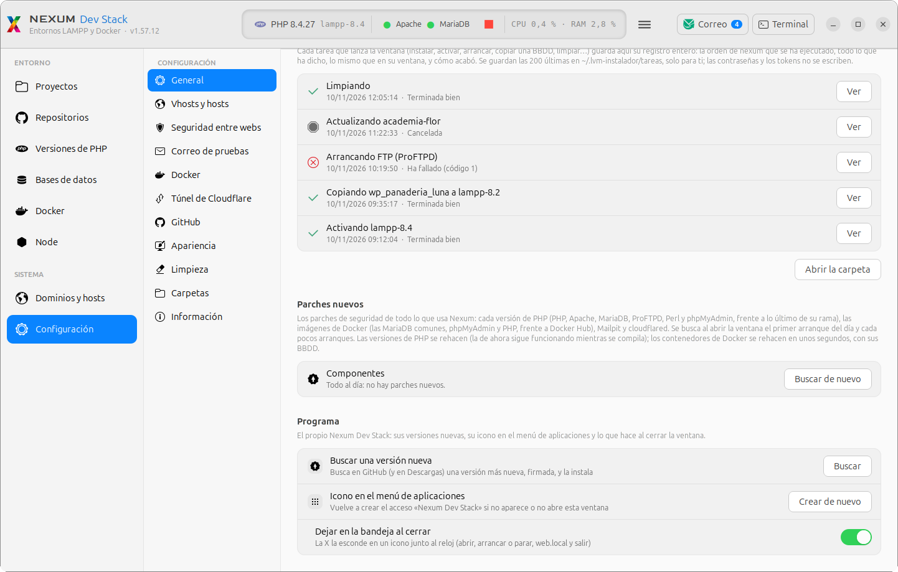
- Los apartadosLa columna de Configuración. El elegido se recuerda al volver.
- ComponentesMientras mira, dice «Buscando parches nuevos…». Luego, «Todo al día: no hay parches nuevos.», o la lista de lo que tiene un parche nuevo, con la versión de ahora y la nueva (cada versión de PHP con su Apache, MariaDB, FTP, Perl y phpMyAdmin, las imágenes de Docker, Mailpit y cloudflared). Si algo no se ha podido consultar, dice «No se ha podido consultar: …».
- Buscar de nuevoVuelve a consultar ahora. Si hay algo, sale al lado «Actualizar todo (N)», en verde, que lo pone al día de una vez.
- Cuándo se buscan: solos, al abrir la ventana el primer día y después cada pocos arranques; y cuando pulses «Buscar de nuevo». Si al abrir hay alguno, abajo sale «Hay parches nuevos: míralos en los avisos de arriba».
- Actualizar todo (N): te pregunta «¿Actualizar todo?» con la lista de lo que se va a poner al día. Las versiones de PHP se vuelven a compilar con lo último de su rama (la de ahora sigue funcionando mientras tanto, varios minutos); los contenedores de Docker en marcha se rehacen en segundos, sin cambiar sus bases de datos ni su configuración; Mailpit y cloudflared se reinstalan. Trae la casilla «Guardar antes una copia en ~/nexum-backups», desmarcada: márcala si alguna versión puede cambiar de rama de MariaDB, porque entonces empieza con las bases de datos vacías. Sin ella, avisa en rojo: «Sin copia, si su MariaDB cambia de rama, sus BBDD no se podrán recuperar.» Pulsa «Actualizar todo» y escribe la contraseña de administrador. La tarea «Actualizando los componentes» acaba con «Componentes al día».
- El aviso de arriba: «Hay parches nuevos (N)», con «Conviene ponerlos: son parches de seguridad» y la lista (las 6 primeras y «…y N más»). «Actualizar todo» hace lo mismo que aquí. Con «Ahora no» no vuelve a avisar hasta que salga otro parche; siguen en este apartado.
Vhosts y hosts
Los dos ficheros del sistema que deciden qué web se abre con cada dirección, para cambiarlos a mano con red de seguridad. Los dos son del administrador: se edita una copia y se aplica con «Aplicar».
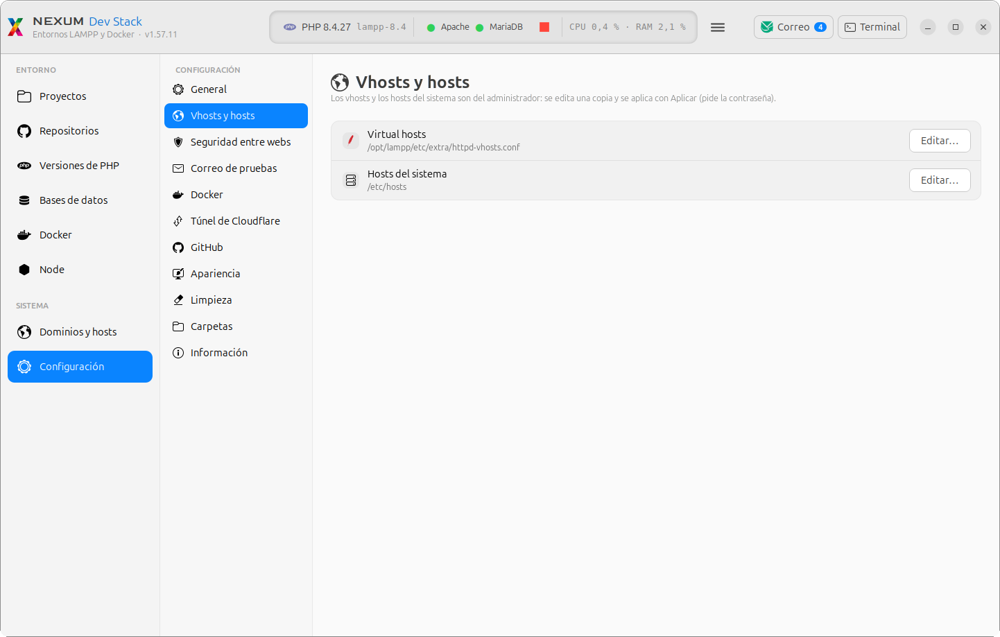
- Virtual hostsEl fichero de vhosts que comparten todas las versiones: qué carpeta se abre con cada dominio. Debajo, su ruta.
- Editar…Abre una copia en tu editor de textos y el diálogo «Editar vhosts». Guarda tus cambios en el editor y pulsa «Aplicar» en el diálogo.
- Hosts del sistema
/etc/hosts: a qué dirección lleva cada nombre. Es el que usa el falseo de dominios. - Editar…Igual que el de los vhosts: una copia, tu editor y el diálogo «Editar hosts» con «Aplicar».
Cambiar uno de los dos ficheros
- Pulsa «Editar…» en su fila. Se abre una copia en tu editor de textos (la copia va en la carpeta de registros del programa, no en el fichero de verdad) y, en la ventana, el diálogo «Editar vhosts» o «Editar hosts», que lo explica.
- Haz los cambios en el editor y guárdalos.
- Pulsa «Aplicar» en el diálogo (o «Cancelar» para dejarlo). Pide la contraseña de administrador.
- Antes de aplicar se comprueba: los vhosts solo admiten lo que es propio de un vhost (no
Listen,Includeni módulos), y Apache los revisa: si no los acepta, se deja lo de antes. Si está en marcha, Apache se recarga. El fichero de hosts tiene que seguir llevandolocalhosta tu equipo, no puede llevar caracteres raros y no puede mandar dominios nuevos a otros equipos (solo a127.x). - Copia: con las copias de los ficheros que cambia el programa encendidas, de los dos se guarda la versión anterior en
~/nexum-backups, con la fecha. - Contraseña: se pide al aplicar, porque los dos ficheros son del administrador.
- Si no has guardado en el editor, el programa te lo dice («No has cambiado nada… (¿guardaste los cambios?)») en vez de aplicar nada.
- También desde el menú ☰ de arriba: «Editar vhosts» y «Editar /etc/hosts».
Seguridad entre webs
La barrera que impide que otra web abierta en tu navegador use tus proyectos sin que lo sepas.
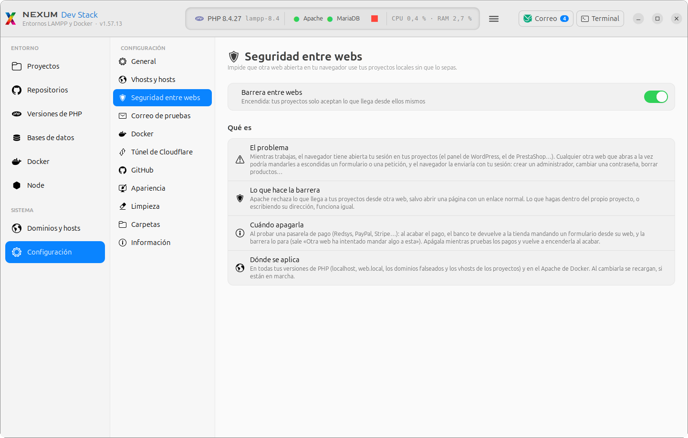
- Barrera entre webs«Encendida: tus proyectos solo aceptan lo que llega desde ellos mismos». Apagada: «Apagada: enciéndela cuando acabes de probar los pagos».
- El interruptorAl cambiarlo se aplica a todas tus versiones de PHP y se recarga Apache. Pide la contraseña de administrador. Si no se puede aplicar en todas, lo deja como estaba.
- Qué esLa explicación en cuatro puntos: el problema, lo que hace la barrera, cuándo apagarla y dónde se aplica.
- De partida: encendida.
- Qué bloquea: desde otra web solo se puede abrir una página de tus proyectos con un enlace normal; un formulario o una petición que llegue desde otra web se rechaza («Otra web ha intentado mandar algo a esta: no se ha hecho nada»).
- Cuándo apagarla: solo mientras pruebas una pasarela de pago (Redsys, PayPal, Stripe…), que vuelve a tu tienda mandando un formulario desde su web. Enciéndela al acabar.
- Dónde vale: en todas tus versiones: localhost, web.local, los dominios falseados y los vhosts de los proyectos.
Correo de pruebas
Encenderlo o apagarlo, qué hacer con los plugins de correo de WordPress, instalar o actualizar Mailpit y la bandeja: en Correo de pruebas.
Docker
Cómo se sirven tus proyectos de Docker: en qué dirección, con qué dominios y cuándo se paran solos. Van con su propio Apache, en otra dirección de tu equipo (nunca abierta a la red): funcionan sin LAMPP y a la vez que él, con las mismas reglas de seguridad.
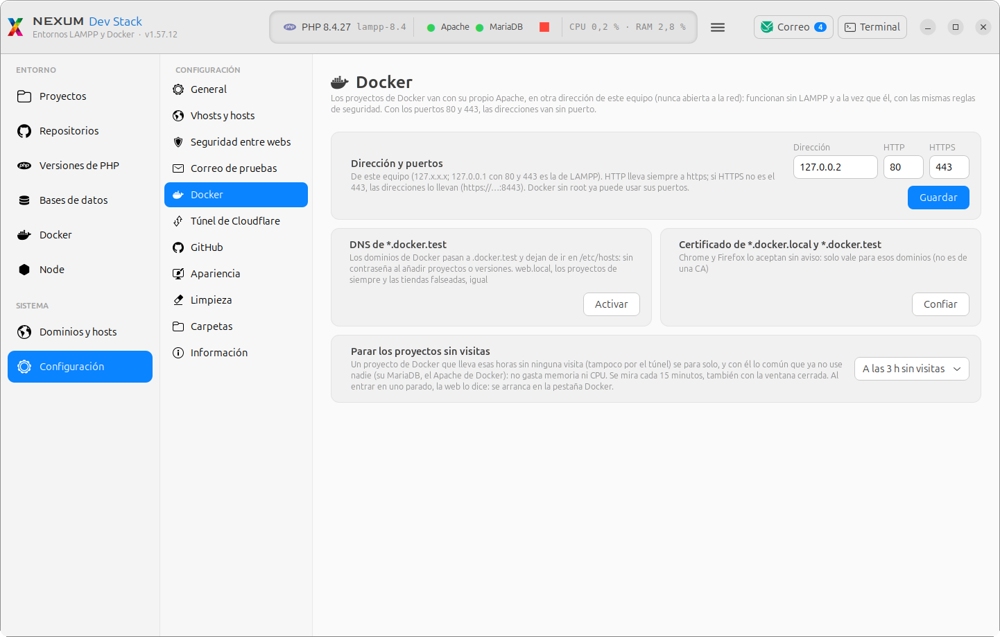
- Dirección y puertosDónde escucha el Apache de Docker: 127.0.0.2, con 80 y 443, de partida. Cambia los campos «Dirección», «HTTP» y «HTTPS» y pulsa «Guardar». Con 80 y 443, las direcciones van sin puerto; con otro HTTPS, lo llevan (
https://…:8443). HTTP lleva siempre a https. - DNS de *.docker.testCon «Activar», los dominios de Docker pasan a
.docker.test, dejan de ir en el fichero de hosts y ya no se pide la contraseña por los dominios al añadir proyectos o versiones de PHP. Puesto, el botón dice «Quitar». - Certificado de Docker«Confiar» hace que Chrome y Firefox acepten los
https://de Docker sin aviso. Solo vale para esos dominios: no es de una autoridad de certificación. Pide la contraseña de administrador. - Parar los proyectos sin visitasCuántas horas sin visitas tiene que estar un proyecto para pararse solo, con lo común que ya no use nadie (su MariaDB, el Apache de Docker). Debajo, «Lo último: …» dice qué pasó la última vez.
- Cuándo«Nunca», «A la hora sin visitas», o «A las 2, 3, 4, 6, 8, 12 o 24 h sin visitas». Se aplica al momento, sin contraseña.
- La dirección tiene que ser de tu equipo (
127.x.x.x), nunca abierta a la red, y los dos puertos, números distintos. En127.0.0.1no se pueden usar el 80 ni el 443: son de LAMPP. Si no, al pulsar «Guardar» sale «Dirección o puertos no válidos». - Al guardar se mueven los dominios de Docker a la dirección nueva y se rehace el Apache de Docker. Pide la contraseña de administrador.
- «Permitir» sale al lado de «Guardar» solo si tu sistema no deja a Docker sin root usar los puertos elegidos (los de menos de 1024). Al pasar el ratón dice desde qué puerto los permite. Lo cambia una vez, con la contraseña de administrador.
- «Activar» el DNS te pregunta antes «¿Activar el DNS de *.docker.test?»: es un DNS mínimo, solo en tu equipo, que contesta a cualquier
algo.docker.test. Los proyectos de Docker pasan a.docker.test(su configuración, el dominio de las tiendas en su base de datos y el certificado).web.local, los proyectos de siempre y los dominios falseados de las tiendas no cambian. Si no contesta, se quita y todo sigue como estaba. Pide la contraseña de administrador. - «Quitar» el DNS te pregunta «¿Quitar el DNS de *.docker.test?»: los dominios siguen siendo
.docker.testy vuelven al fichero de hosts. Pide la contraseña de administrador. - «Confiar» necesita
certutil; si falta, la tarea dice cómo instalarlo (sudo apt install libnss3-tools). Si Chrome estaba abierto, ciérralo y vuelve a abrirlo. - Sin visitas: 3 horas de partida. Se mira cada 15 minutos, también con la ventana cerrada, y las visitas por el túnel cuentan. Al entrar en uno parado, la web lo dice: se arranca en la página Docker.
Túnel de Cloudflare
El programa que abre los túneles para compartir tus webs, el túnel que haya abierto y su registro. La contraseña, las horas y el bloqueo del panel de cada túnel se eligen al abrirlo, con «Compartir».
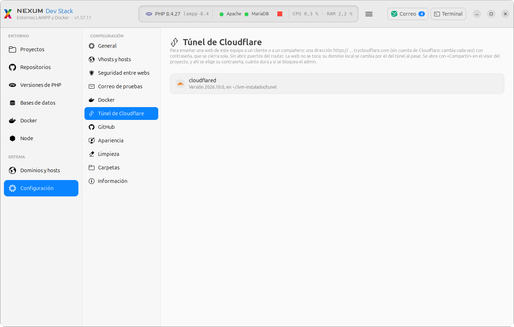
- cloudflaredSu versión y dónde está. Si aún no está: «Aún no está: se descarga de GitHub la primera vez que compartes (unos 40 MB)», con «Instalar». Si hay una nueva, «Actualizar a la X». Se descarga comprobada y pide la contraseña de administrador.
- Dónde va: cloudflared se guarda en tu carpeta personal, con tu usuario. Instalarlo o actualizarlo pide la contraseña de administrador.
- Con un túnel abierto sale la fila «Túnel abierto»: la dirección, a qué web lleva y hasta qué hora. «Ver» enseña su dirección y su contraseña; «Cerrar» (en rojo) lo cierra al momento, sin preguntar: «Túnel cerrado: la dirección ya no lleva a ningún sitio».
- Registro del túnel: sale cuando ya se ha abierto alguno. Quién ha entrado, las contraseñas equivocadas y lo bloqueado en el último túnel, con «Ver» (sus últimas líneas).
- Cómo se comparte una web: en Compartir una web.
GitHub
La cuenta de GitHub de la página Repositorios: con qué te conectas, de quién ves los repositorios y cuáles.
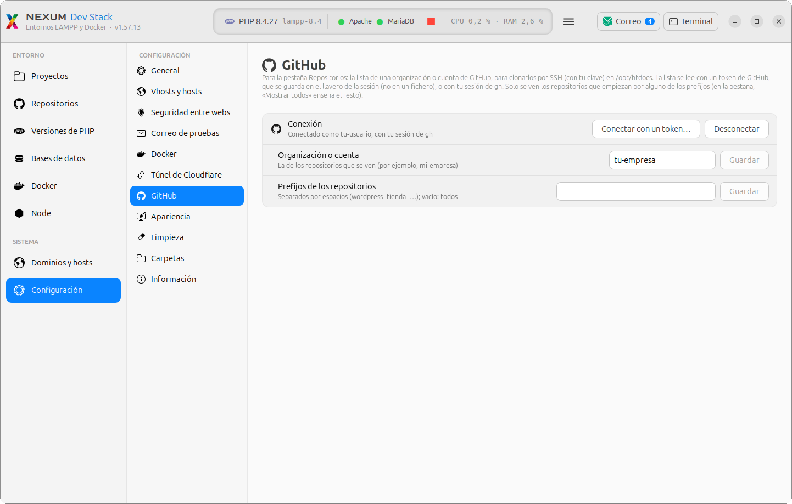
- Conexión«Conectado como …, con el token del llavero» (o «con tu sesión de gh»); «Sin conectar», o «⚠ El token ya no vale (¿caducado?): conéctalo de nuevo». Botones: «Conectar con un token…» (en verde si no estás conectado), «Usar la sesión de gh» (solo si tienes
ghinstalado y no la usas ya) y «Desconectar» (solo si estás conectado). - Organización o cuentaDe quién son los repositorios que ves (por ejemplo,
mi-empresa). Escribe su nombre (o su dirección de GitHub, o@nombre) y «Guardar». - PrefijosCon qué empiezan los nombres de los repositorios que quieres ver, separados por espacios (por ejemplo,
wordpress- tienda-). Vacío: todos. Y «Guardar».
El diálogo «Conectar con GitHub»
- «Crear un token en GitHub»: abre GitHub con los permisos
repoyread:orgya marcados. - El campo del token: pega ahí el token (
ghp_…ogithub_pat_…). No se ve lo que escribes. - «Conectar»: se activa con al menos 20 caracteres. Lo comprueba con GitHub antes de guardarlo. Si no vale, te dice «Eso no parece un token de GitHub…» o «GitHub no acepta ese token (¿caducado o sin permiso?)».
- «Cancelar»: cierra sin cambiar nada.
- El token se guarda en el llavero de tu sesión, nunca en un fichero, y solo se usa para leer la lista: los repositorios se clonan por SSH, con tu clave.
- Si falta secret-tool (lo que guarda el token en el llavero), te dice cómo instalarlo:
sudo apt install libsecret-tools. - «Usar la sesión de gh»: usa la sesión que ya tienes con
gh auth login, sin token. - «Desconectar»: no pregunta. Quita el token del llavero.
- La cuenta: al conectar, si aún no hay ninguna, se pone la tuya. Si escribes otra, se comprueba que exista en GitHub.
- «Guardar» solo se activa cuando cambias lo escrito (Intro también guarda). Si no vale, sale una ventana «No se ha guardado» con el motivo, y lo que escribiste se queda.
- Ninguna de estas acciones pide la contraseña de administrador.
- Cómo se conecta, paso a paso: en Repositorios de GitHub.
Registro de errores
Los dos ficheros que hay que mirar cuando una web da un error. Lo más reciente está al final.
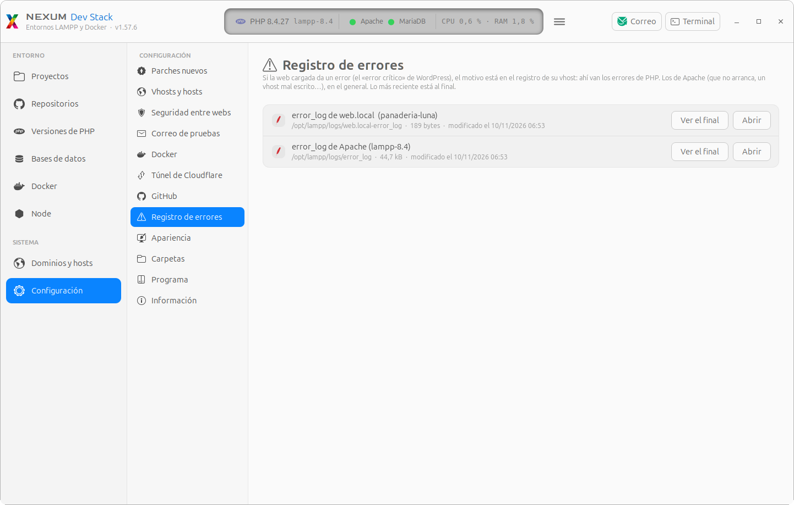
- El del proyecto cargadoEl registro de su vhost: ahí van los errores de PHP de esa web, como el «error crítico» de WordPress. Solo sale con un proyecto cargado que tenga su propio registro.
- El general de ApacheEl de la versión activa: lo que impide arrancar a Apache, un vhost mal escrito…
- Ver el finalLas últimas 400 líneas, en una ventana con «Copiar todo» y «Actualizar». Apagado si el fichero está vacío.
- AbrirEl fichero entero en tu editor. Si pasa de 20 MB, está apagado: usa «Ver el final».
- Debajo de cada uno: su ruta, lo que ocupa y cuándo cambió. Si aún no existe, lo dice: se crea con el primer error.
- Aquí no se configura nada: es para consultar.
Apariencia
Cómo se ve la ventana. Se guarda al momento y vale también para la versión del Mac.
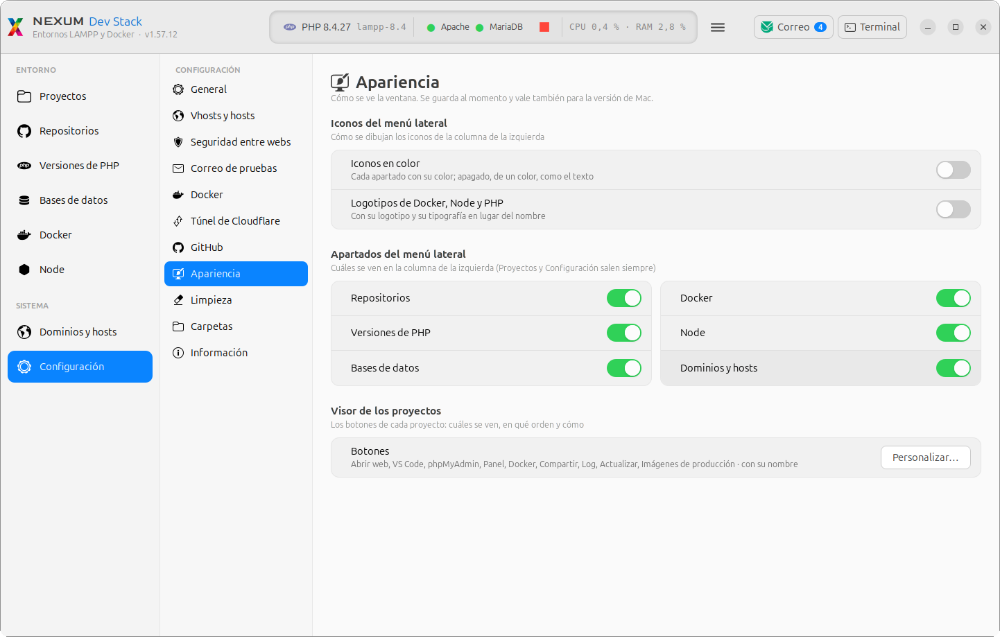
- Iconos en colorCada apartado del menú lateral con su color; apagado, de un color, como el texto.
- Logotipos de Docker, Node y PHPEn el menú lateral, con su logotipo y su tipografía en lugar del nombre.
- Apartados del menú lateralUn interruptor por página: Repositorios, Versiones de PHP, Bases de datos, Docker, Node y Dominios y hosts. Apaga las que no uses. Proyectos y Configuración se ven siempre.
- Personalizar…Los botones del visor de los proyectos. A su izquierda, «Botones» dice cuáles se ven y con qué estilo.
El diálogo «Botones del proyecto»
- La lista: Abrir web, VS Code, phpMyAdmin, Panel, Docker, Compartir, Log, Actualizar e Importar. La casilla de cada uno lo enseña u oculta en el visor; las flechas «Antes» y «Después» lo mueven.
- «Estilo»: «Con su nombre», «Solo el icono (cuadrado)» o «Icono y nombre (cuadrado)».
- «Tamaño»: el lado del cuadrado, de 32 a 128 px, con su medida al lado. Con «Con su nombre» no se usa. De partida, 44 px solo con el icono y 88 px con icono y nombre.
- «Así quedan»: la vista previa, con Desmontar y ⋮, que salen siempre.
- «Como al principio»: vuelve a los botones de siempre.
- «Cancelar» / «Guardar»: al guardar, abajo sale «Botones del proyecto guardados».
- De partida: iconos sin color, sin logotipos y todas las páginas a la vista; botones con su nombre, todos y en el orden de la lista.
- Los botones del visor valen para el del proyecto cargado y el de Docker. Desmontar, ⋮ y los propios de Docker (Versiones de PHP, Arrancar o Parar) se ven siempre.
Limpieza
Lo que el programa y tus webs van dejando con el uso y se puede borrar para recuperar espacio, cada cosa con lo que ocupa. Lo que se limpia no se puede recuperar: no se hacen copias.
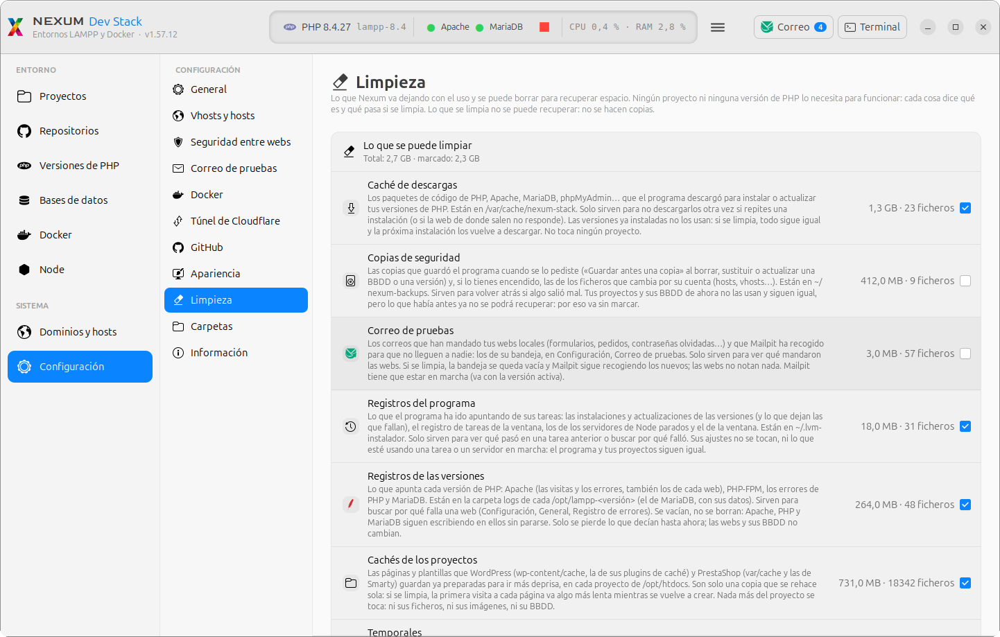
- Lo que se puede limpiarEl total de todo y lo que suma lo que tienes marcado. Mientras mide, pone «Midiendo…».
- Caché de descargasLo ya descargado y comprobado de PHP, Apache, MariaDB…
(
/var/cache/nexum-stack). Si se limpia, la próxima instalación lo descarga otra vez. Las versiones instaladas no se tocan. - Copias de seguridadTodo lo de
~/nexum-backups, las copias que pides con «Guardar antes una copia». La carpeta se queda. Viene desmarcada. - Correo de pruebasLos correos que ha recogido Mailpit: la bandeja se queda vacía. Mailpit tiene que estar en marcha. Viene desmarcado.
- Registros del programaLos de las instalaciones (y lo que dejan las que fallan) y los de Node,
en
~/.lvm-instalador. Tus ajustes no se tocan, ni el registro de una tarea que esté en marcha. - Registros de las versionesLos de Apache (también el de cada web), PHP-FPM, PHP y MariaDB de cada versión. Se vacían, no se borran, porque los servicios los tienen abiertos: se pierde lo que decían hasta ahora.
- Cachés de los proyectosLa caché de todos tus proyectos a la vez, la misma que Limpiar un proyecto.
- TemporalesLo que dejan las tareas en la carpeta temporal y en
~/.lvm-instalador. Solo lo que lleva más de un día sin cambiar y nada está usando. - Sesiones de PHPLos ficheros de sesión de las webs locales de cada versión. Si se limpian, se cierran las sesiones abiertas: hay que volver a entrar en la administración de cada web. Viene desmarcado.
- Lo que ocupa y su casillaCada cosa dice lo que ocupa y cuántos ficheros tiene, o «Vacío» (y entonces su casilla está apagada). Marca lo que quieras limpiar: lo que marques se recuerda mientras la ventana sigue abierta.
- Limpiar lo marcado…Te pregunta antes «¿Limpiar lo marcado?», con lo que se va a hacer numerado (cada cosa con lo que ocupa) y el aviso en rojo «Lo que se limpia no se puede recuperar: no se hacen copias.». Pulsa «Limpiar», en rojo. Si algo es del administrador, se pide su contraseña. Al acabar, vuelve a medir. Apagado si no hay nada marcado.
- Solo lo que se marca. De partida van marcados la caché de descargas, los registros del programa y de las versiones, las cachés de los proyectos y los temporales; sin marcar, las copias de seguridad, el correo y las sesiones de PHP.
- En la terminal:
lvm-instalador limpiezadice lo que ocupa cada cosa ylvm-instalador limpiarcon lo que quieras detrás (descargas,copias,correo,registros,registros-versiones,caches-proyectos,temporales,sesiones) lo limpia.
Carpetas
Las carpetas importantes del programa, a un clic.
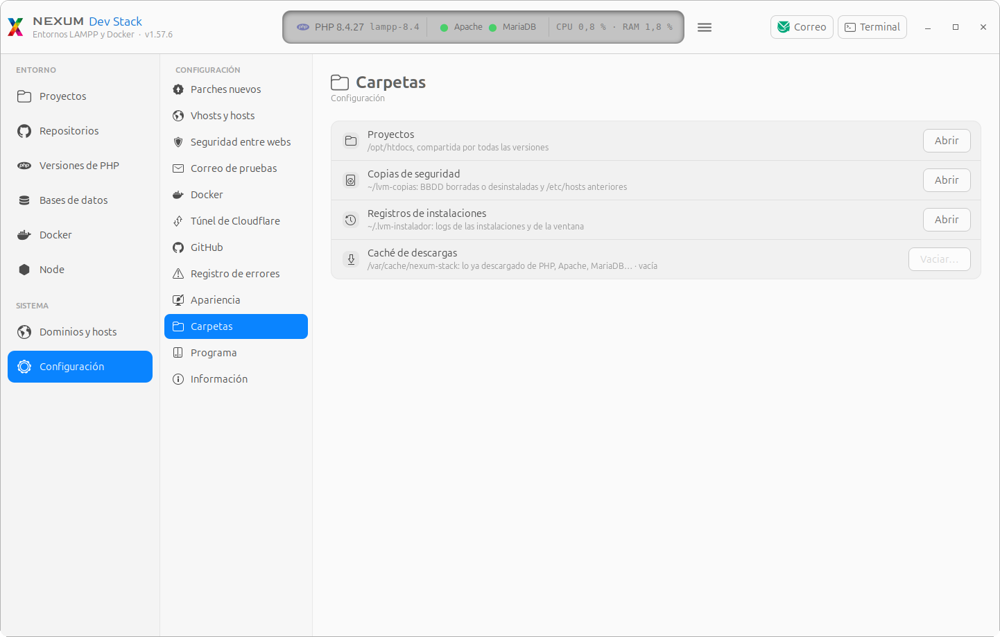
- ProyectosLa carpeta de tus proyectos, la que comparten todas las versiones.
- Copias de seguridad
~/nexum-backups: las copias que pides al borrar, sustituir o actualizar (con la casilla «Guardar antes una copia en ~/nexum-backups» de cada diálogo) y, si enciendes el interruptor de abajo, las de los ficheros que cambia el programa. Dice lo que ocupa y cuántos ficheros tiene, o «vacía». Si aún no existe, «Abrir» la crea. - Borrar…Te pregunta antes «¿Borrar las copias de seguridad?», con los pasos: «Se borra todo lo que hay en ~/nexum-backups: N ficheros (tamaño). La carpeta se queda, vacía.» y «Si alguna copia es del administrador, se pide su contraseña para borrarla.», y la nota «Las copias borradas no se pueden recuperar.». Pulsa «Borrar las copias», en rojo. Apagado si la carpeta está vacía.
- Copias de los ficheros que cambia el programa«El fichero de hosts, los vhosts y la configuración de los proyectos, antes de cambiarlos». Encendido, antes de cambiar uno de esos ficheros por su cuenta (al falsear un dominio, encender o apagar un
.local, crear un dominio, arreglar certificados, editar los vhosts o el fichero de hosts, cargar un proyecto…) se guarda el de antes en~/nexum-backups. Viene apagado. No pide la contraseña. - Registros de instalaciones
~/.lvm-instalador: los registros de las instalaciones y de la ventana. - Caché de descargasLo ya descargado de PHP, Apache, MariaDB… para no volver a descargarlo al reintentar, y para usarlo si su web no responde. Dice dónde está (
/var/cache/nexum-stack), lo que ocupa y cuántos ficheros tiene, o «vacía». - Vaciar…Te pregunta antes «¿Vaciar la caché de descargas?» y pulsa «Vaciar la caché». Pide la contraseña de administrador (la carpeta es suya). Las versiones instaladas no se tocan; la próxima instalación lo descargará otra vez. Apagado si la caché está vacía.
- Copias de los ficheros que cambia el programa: apagado de partida. Encendido, se guarda en
~/nexum-backupsel fichero de hosts, los vhosts o la configuración de un proyecto (suwp-config.phpo suparameters.php) antes de que el programa los cambie, y la caché vieja de una tienda se aparta allí en lugar de borrarse. En la terminal:lvm-instalador copias-ficheros si(ono). - Las copias de bases de datos y de código no dependen de este ajuste: se guardan cuando marcas su casilla en cada diálogo.
- Lo demás no se configura: «Abrir» abre cada carpeta en tu explorador de archivos, y «Borrar…» y «Vaciar…» las vacían.
XAMPP sin registrar
Solo sale si en /opt/lampp hay una instalación de XAMPP completa, y no un enlace a una de tus versiones. Para gestionarla
junto a las demás, hay que registrarla con un nombre.
- Pulsa «Registrar…» en la fila «XAMPP en /opt/lampp».
- Escribe el nombre de la versión en el diálogo «Registrar el XAMPP de /opt/lampp» (por ejemplo,
8.2.12). Solo números, letras, puntos y guiones; si no, sale «Nombre no válido». - Pulsa «Registrar el XAMPP». Pasa a
/opt/lampp-nombre y comparte la carpeta de proyectos y los vhosts con las demás versiones. Pide la contraseña de administrador.
- Solo el nombre con el que se registra. Después la ves en Versiones de PHP.
Programa
El propio programa: sus actualizaciones, su icono y la bandeja.
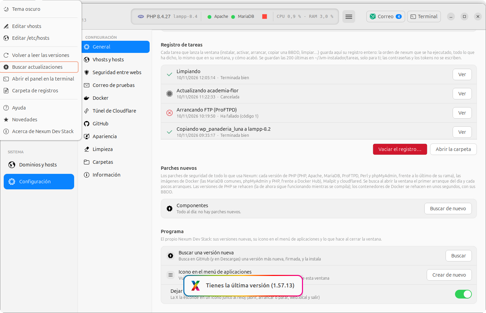
- Buscar una versión nueva«Buscar» mira en GitHub (y en tu carpeta de Descargas) si hay una versión más nueva y firmada. Si no la hay: «Tienes la última versión (…)».
- Icono en el menú«Crear de nuevo» vuelve a poner «Nexum Dev Stack» en el menú de aplicaciones, si no aparece o no abre esta ventana. Dice «Icono creado en el menú de aplicaciones».
- Dejar en la bandeja al cerrarEncendido, cerrar la ventana la esconde en un icono junto al reloj, con lo básico: abrirla, arrancar o parar, web.local y salir.
Si hay una versión nueva
- Lee el aviso «Hay una versión nueva de Nexum Dev Stack»: de qué versión a cuál, de dónde viene y su huella SHA-256.
- Pulsa «Actualizar a la X» y escribe la contraseña de administrador. Tus versiones, proyectos y bases de datos no se tocan.
- Espera. La ventana se cierra y se vuelve a abrir con la versión nueva.
- De partida: con el icono junto al reloj.
- Si falta su componente, el interruptor sale apagado y la fila dice cómo instalarlo:
sudo apt install gir1.2-ayatanaappindicator3-0.1.
Información
Lo que hay que saber del programa.
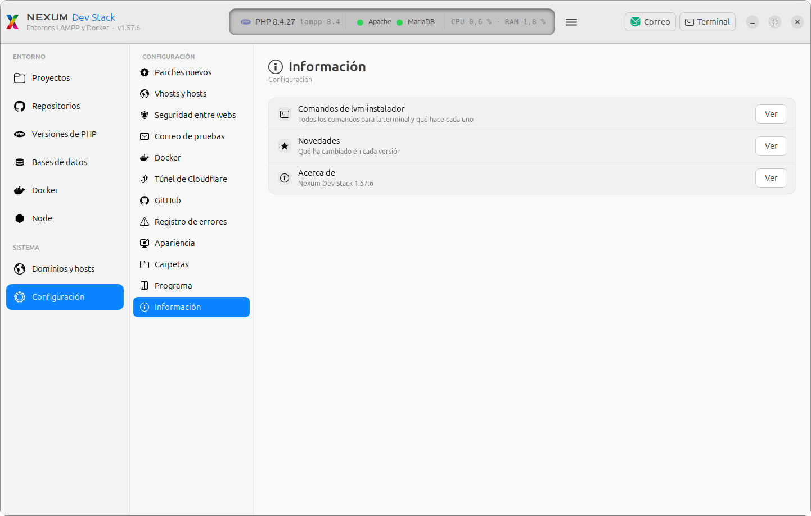
- Comandos de lvm-instalador«Ver»: todos los comandos de la terminal y qué hace cada uno (lo mismo que
lvm-instalador --ayuda), con «Copiar todo». - Novedades«Ver»: qué ha cambiado en cada versión.
- Acerca de«Ver»: el nombre y la versión del programa.
- Aquí no se configura nada.
Correo de pruebas
Lo que mandan tus webs (un pedido, un formulario, una contraseña nueva) llega a una bandeja de tu equipo y nunca a un cliente real, aunque la base de datos sea una copia de producción.
Lo recoge Mailpit, que se instala comprobado y arranca y se para con la versión activa. Solo se ve desde tu equipo. Está encendido de partida. Todo está en Configuración → Correo de pruebas, y el botón «Correo» de arriba te lleva ahí desde cualquier página.
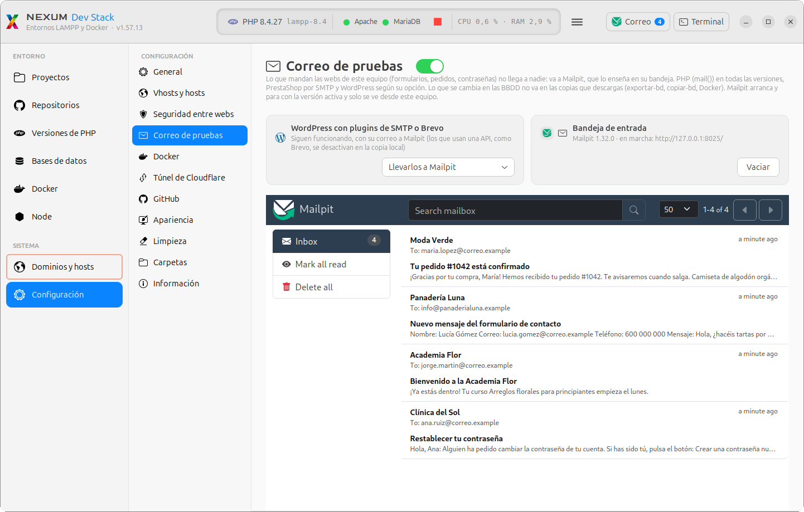
- Encendido o apagadoEl interruptor, al lado del título. Apagado, lo que manden las webs puede llegar de verdad a los clientes de las bases copiadas, y al lado lo dice en rojo. Por eso, al apagarlo te pregunta antes. Encenderlo o apagarlo pide la contraseña de administrador.
- WordPress con plugins de correoQué hacer con los plugins de SMTP o de envío por API (Brevo, SendGrid,
Mailgun…): «Llevarlos a Mailpit» (de partida; los de API se desactivan en la copia local), «Desactivarlos en la copia
local» (WordPress manda con
mail(), a Mailpit) o «No tocarlos», que sale en rojo porque sus correos pueden llegar de verdad. Cambiarlo pide la contraseña de administrador. Con el correo apagado no se puede cambiar. - La bandejaLa versión de Mailpit y su dirección (
http://127.0.0.1:8025/, solo desde tu equipo), o «parado: arranca con la versión activa». Si hay una versión nueva de Mailpit, al lado sale «Actualizar a X». - VaciarBorra todos los correos de la bandeja, después de preguntarte. Solo con Mailpit en marcha. No pide contraseña.
- La bandejaCuántos correos hay. «Mark all read» los marca como leídos y «Delete all» los borra todos.
- Los correosCada uno con quién lo manda, a quién iba, su asunto y el principio del texto, el más nuevo arriba. Púlsalo para abrirlo. La bandeja está en inglés: es la de Mailpit.
- El botón CorreoDesde cualquier página: te trae aquí, y su número dice cuántos tienes sin leer (hasta «99+»).
Encender o apagar el correo de pruebas
- Pulsa el interruptor que hay al lado del título del apartado.
- Si lo apagas, te pregunta «¿Apagar el correo de pruebas?»: lo que manden las webs (pedidos, formularios, contraseñas) podrá llegar de verdad a los clientes de las bases copiadas. Pulsa «Apagarlo» (en rojo) o «Cancelar».
- Si lo enciendes sin tener Mailpit, te pregunta «¿Instalar Mailpit?» y pulsa «Instalar Mailpit». Si pulsas «Cancelar», el correo se enciende igual, pero sin Mailpit: el correo de las webs no sale ni se ve hasta que lo instales.
- Escribe la contraseña de administrador. Se aplica a todas tus versiones. Si no se puede, se deja como estaba.
Instalar o actualizar Mailpit
- «Instalar Mailpit»: si no está, en lugar de la bandeja sale «Mailpit no está instalado» con este botón, en verde. Se descarga de GitHub y se comprueba antes de instalarlo. Pide la contraseña de administrador.
- «Actualizar a X»: sale en la fila de la bandeja si hay una versión más nueva. Lo mismo: descarga comprobada y contraseña.
Vaciar la bandeja
- Pulsa «Vaciar».
- Confirma en «¿Vaciar la bandeja de Mailpit?»: se borran todos los correos que han mandado las webs de este equipo. Pulsa «Vaciar la bandeja». Abajo sale «Bandeja de Mailpit vacía».
Un correo abierto
Así se ve el que ha mandado una tienda al confirmar un pedido de prueba: el correo tal y como le llegaría al cliente, pero sin salir de tu equipo.
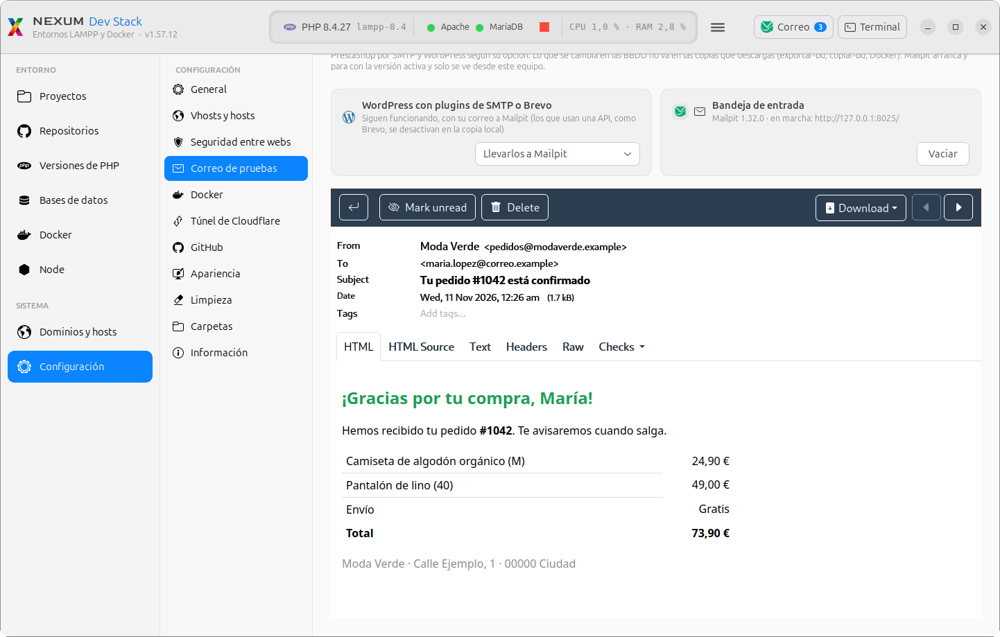
- VolverA la lista de correos.
- Marcar como no leído y borrar«Mark unread» lo deja como si no lo hubieras abierto; «Delete», lo borra.
- DescargarEl correo entero o sus adjuntos. Los descarga el navegador, que te pregunta dónde guardarlos.
- Anterior y siguientePasa al correo de al lado sin volver a la lista.
- De quién y para quiénRemitente, destinatario, asunto y cuándo llegó. Es la dirección a la que habría llegado de verdad: así compruebas que la web manda cada correo a quien toca.
- Cómo verloHTML, como lo vería el cliente; Text, la versión sin formato; Headers y Raw, sus cabeceras y el correo tal cual; Checks, comprobaciones del propio Mailpit sobre el correo.
- El contenidoEl correo tal y como lo ha mandado la web. Los enlaces se abren en tu navegador, solo si los pulsas: un correo no puede abrir nada por su cuenta.
Si la bandeja no se ve dentro de la ventana
En su lugar sale un aviso que dice por qué. Con Mailpit en marcha, debajo tienes «Abrir en el navegador», que abre la misma bandeja en tu navegador.
- «Mailpit está parado: arranca con la versión activa.» Arranca la versión activa arriba.
- «Para ver la bandeja dentro de la ventana falta su componente:» debajo, la orden para instalarlo
(
sudo apt install gir1.2-webkit2-4.1). Mientras tanto, el botón «Correo» de arriba abre la bandeja en el navegador. - «La bandeja no se puede ver dentro de la ventana en este equipo.» El visor no ha podido arrancar: usa «Abrir en el navegador».
Cómo lo consigue
- PHP: el
mail()de todas tus versiones va a Mailpit. - WordPress: lo que se manda por SMTP también va a Mailpit, y los envíos por API conocidos se cortan.
- PrestaShop: en la copia local, su configuración de correo pasa a la de Mailpit.
- Nada se queda en tus copias: lo que se cambia en una base de datos se apunta y se deshace al apagar el correo, y no va en las copias que descargas o exportas.
Preguntas
¿Le puede llegar a un cliente el pedido que hago de prueba?
Con el correo de pruebas encendido, no. Sí podría con el correo apagado o con los plugins de WordPress en «No tocarlos».
No veo el botón «Correo» arriba
Sale solo con el correo de pruebas encendido.
Pulso «Correo» y no se abre la bandeja
Si Mailpit no está instalado, te lleva a Configuración → Correo de pruebas para instalarlo. Si está parado, te dice que arranques la versión activa: Mailpit funciona con ella.
Compartir una web
Enséñale a un cliente o a un compañero una web de tu equipo, tal y como está, con una dirección temporal de internet y una contraseña.
Usa un túnel de Cloudflare: no hace falta cuenta ni abrir puertos en el router. La dirección
(https://….trycloudflare.com) cambia cada vez y lleva una contraseña nueva al azar, de tres grupos de cuatro letras y
números (por ejemplo, abcd-2345-wxyz). La web no se toca: su dominio local se cambia por el del túnel al pasar. En Proyectos y
en Docker, lo que cambies en tu equipo se ve al momento; en Node se comparte la versión compilada. Solo se pueden compartir webs de tu
equipo.
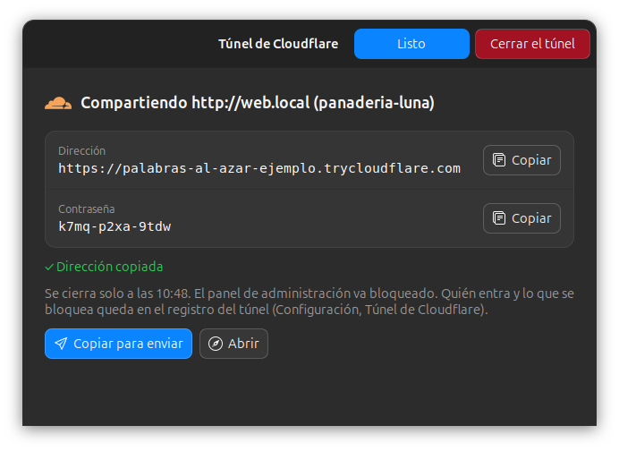
Dónde está el botón
- «Compartir», en el visor del proyecto cargado en Proyectos: comparte
web.local. - «Compartir», en el visor de un proyecto de Docker. Si tiene varias versiones de PHP, es un menú: elige «PHP X · dirección». Solo con el proyecto en marcha.
- «Túnel», en cada proyecto de Node.
- Mientras está abierto, el botón dice «Compartiendo», en verde, y vuelve a enseñarte la dirección y la contraseña.
Compartir un proyecto
- Pulsa «Compartir» en el visor del proyecto (en Proyectos, en Docker o, en Node, «Túnel»). Se abre el diálogo «Compartir …», que te recuerda que cualquiera con la dirección y la contraseña verá la web mientras el túnel esté abierto. Si ya hay otro abierto, te avisa de que se cierra.
- Elige cuánto dura en «Se cierra solo en» (de 1 a 12 horas; 2 de partida).
- Deja encendido «Bloquear el panel de administración»: así nadie puede intentar entrar en el escritorio de WordPress o en el de PrestaShop por el túnel (tus bases llevan el administrador de pruebas, con una contraseña conocida). Si lo apagas, la nota de debajo te avisa en rojo.
- Pulsa «Compartir» y escribe la contraseña de administrador. La primera vez se descarga antes cloudflared, el programa de Cloudflare (unos 40 MB, comprobado).
- Copia lo que vas a enviar. Sale el diálogo del túnel con la dirección y la contraseña.
- Cuando acabe, se cierra solo a su hora, aunque cierres la ventana. Para cerrarlo antes: «Cerrar el túnel».
El diálogo del túnel abierto
- «Dirección» y «Contraseña», cada una con su botón «Copiar». Debajo sale en verde «✓ Dirección copiada» o «✓ Contraseña copiada».
- Hasta cuándo: «Se cierra solo a las …» y si el panel de administración va bloqueado o no.
- «Copiar para enviar»: copia un texto listo para pegar en un correo o un mensaje: «Te paso la web en pruebas:», la dirección, «Contraseña: …» y «(Funciona hasta las ….)».
- «Abrir»: abre tú la dirección en el navegador.
- «Cerrar el túnel» (en rojo): lo cierra ya. La dirección deja de llevar a ningún sitio.
- «Listo»: cierra el diálogo y deja el túnel abierto.
Lo vuelves a abrir con «Compartiendo» o en Configuración → Túnel de Cloudflare → «Ver».
Lo que ve quien recibe la dirección
Una página «Web en pruebas»: «Esta web está en pruebas. Escribe la contraseña que te han dado.», con un campo y el botón «Entrar». Con la contraseña buena entra en la web. Si se equivoca, dice «Esa no es la contraseña.».
Preguntas
¿Puede entrar en phpMyAdmin quien tenga la dirección?
No, nunca: phpMyAdmin no pasa por el túnel, ni los paneles de XAMPP, el estado del servidor ni los ficheros ocultos. El panel de WordPress o de PrestaShop, tampoco, salvo que apagues el bloqueo.
¿Quién ha entrado?
En Configuración → Túnel de Cloudflare → «Registro del túnel»: quién entra, las contraseñas equivocadas y lo que se ha bloqueado. Con 8 contraseñas equivocadas en 10 minutos desde el mismo sitio, sale «Demasiados intentos» y tiene que esperar unos minutos.
¿Se puede tener más de un túnel?
No: uno a la vez. Al abrir otro, se cierra el que había.
No se abre el túnel
La tarea enseña lo último que ha dicho cloudflared. Lo normal es que no haya conexión a internet o que Cloudflare no dé túneles rápidos en ese momento: prueba en un rato.
¿Se cierra si paro el proyecto?
En Node, sí: «Parar» cierra también el túnel que lo compartía.
Seguridad
Un entorno de desarrollo suele tener copias de webs de clientes con datos reales. El programa está pensado para que nada de eso quede al alcance de otros.
Apache, MariaDB y el FTP de cada versión solo escuchan en tu equipo. Si una versión no se puede cerrar a la red, no arranca.
Otra web abierta en tu navegador no puede mandar nada a tus proyectos a escondidas.
Todo lo que se descarga se comprueba con su suma sha256 y, si su autor la publica, con su firma. Si no coincide, se cancela.
Una versión nueva del programa solo se instala si lleva la firma de su autor.
PHP y MariaDB no se instalan en el sistema: cada versión vive en su carpeta y solo funciona cuando está activa.
Las versiones se compilan con un usuario del sistema sin contraseña ni sesión, para que ningún programa tuyo pueda cambiar lo que se instala.
La contraseña de administrador solo se envía cuando la pide el sistema de verdad, y el token de GitHub se guarda en el llavero de tu sesión, nunca en un fichero.
Antes de borrar o sustituir una base de datos, cada diálogo te ofrece guardar una copia
en ~/nexum-backups, y te avisa en rojo si no la guardas. Las del fichero de hosts y los vhosts, si las enciendes en
Configuración → Carpetas. La carpeta es solo tuya.
El navegador acepta el certificado propio de cada proyecto, y el de un dominio real solo mientras está falseado.
root sin contraseña y Apache funciona con tu
usuario, para que todo sea cómodo en local. Por eso, no cargues proyectos ni copias de bases de datos de origen dudoso.Comandos de la terminal
Todo lo de la ventana se puede hacer también con lvm-instalador en una terminal. La lista completa, con
lo que hace cada uno, sale con lvm-instalador --ayuda (o en Configuración → Información).
--simular delante de cualquier comando y verás lo que haría, sin hacerlo:
lvm-instalador --simular desinstalar 8.2.Los más usados
lvm-instalador ventana- Abre la ventana. Sin nada,
lvm-instaladorabre la ventana o el panel de la terminal. list·estado- Las versiones instaladas; la activa, si está en marcha y lo que lleva cada una.
use 8.4- Cambia la versión activa.
arrancar·parar·reiniciar- La versión activa.
instalar --php 8.4- Instala una versión de PHP (con
--si, sin preguntas). actualizar 8.4- La vuelve a compilar con el último parche de su rama (con
--copia, guardando antes sus bases de datos, por si su MariaDB cambia de rama). desinstalar 8.2 --copia- La desinstala, guardando antes sus bases de datos.
list-db- Las bases de datos de cada versión.
importar-bd·exportar-bd- Carga o descarga una copia de una base de datos (al cargar, con
--copia, guarda antes la que había). copiar-bd·borrar-bd- Copia una base a otra versión (con
--sustituir, encima de la que ya tenga), o la borra. Con--copia, guarda antes la que se sustituye o se borra. actualizar-proyecto·borrar-proyecto- Lo que hacen «Actualizar» y «Borrar el proyecto…» en
Proyectos. Con
--copia, guardan antes lo que se sustituye o se borra. docker-pasar·reparar-bd-sistema- Pasar un proyecto al Apache de Docker y reparar las tablas del
sistema de MariaDB. Con
--copia, guardan antes su base o esas tablas. cargar-proyecto·desmontar-proyecto- Lo que hacen «Cargar» y «Desmontar» en Proyectos.
hosts-falsear mitienda.com si- Falsea un dominio (o
no, para dejar de falsearlo). correo si·correo no- Enciende o apaga el correo de pruebas.
barrera-web si·barrera-web no- Enciende o apaga la barrera entre webs.
asegurar- Cierra a la red la versión activa (con
--todas, todas). componentes·componentes-actualizar- Los parches nuevos de todo, y ponerlo todo al día (con
--copia, comoactualizar).actualizar-atambién admite--copia. descargas·descargas vaciar- La caché de descargas: lo que hay, o vaciarla.
copias·copias vaciar- Las copias de seguridad de
~/nexum-backups: lo que hay y cuánto ocupa, o borrarlas todas (la carpeta se queda). Sin--copia, los comandos que sustituyen o borran no guardan nada y lo dicen al empezar («Sin copia: …»). copias-ficheros si·copias-ficheros no- Enciende o apaga las copias del fichero de hosts, los vhosts y la configuración de los proyectos antes de cambiarlos (sin nada, dice cómo está).
limpieza·limpiar <qué>…- Lo que se puede limpiar y lo que ocupa cada cosa, o limpiarlo (ver Limpieza).
limpiar-proyecto <carpeta> [cache] [registros] [actualizaciones]- La caché, los registros y los restos de actualizaciones de un proyecto (sin nada detrás, todo). Ver Limpiar un proyecto.
novedades·version- Qué ha cambiado en cada versión, y la versión del programa.
Si algo falla
Dónde mirar primero y lo que suele pasar, con su solución.
Dónde mirar
- Una web da un error o sale en blanco: Configuración → Registro de errores. El del proyecto cargado tiene los errores de PHP; el general de Apache, lo que impide arrancar.
- Una instalación ha fallado: no se queda nada a medias. La ventana de la tarea tiene «Ver el log del error», con un informe que se puede copiar entero: el sistema, el paso que falló, sus errores y el final de su registro.
- Los registros de todo: menú ☰ → «Carpeta de registros» (
~/.lvm-instalador).
Problemas habituales
«Espacio insuficiente» al instalar
Cada versión de PHP necesita sitio mientras se compila (unos 5 GB en Linux y 8 GB en el Mac, más 2 de margen). Libera espacio y vuelve a probar; lo ya descargado está en la caché y no se vuelve a descargar.
Una instalación falla porque «su web no responde»
La web de un componente (PHP, Apache, MariaDB…) no contesta. Si ya lo habías descargado otra vez, se usa el de la caché; si no, prueba en un rato.
Error 500 después de cargar un proyecto
Mira su registro de errores. Si su .htaccess lleva php_value o php_flag, quítalos: con PHP-FPM
esos valores van en un fichero .user.ini.
El navegador dice que la conexión no es privada
Pulsa «Confiar» donde te lo proponga el programa y cierra y vuelve a abrir el navegador. El de un dominio real solo se acepta mientras está falseado.
Aviso «Tablas del sistema de MariaDB antiguas»
Vienen de una versión anterior de MariaDB y llenan su registro de errores. «Repararlas» las pone al día, sin tocar las bases de tus
proyectos y, si marcas su casilla, guardando antes una copia en ~/nexum-backups.
No encuentra la versión nueva del programa
Sin conexión no puede consultar GitHub. Prueba más tarde, o deja el paquete .deb en tu carpeta
Descargas: también lo busca ahí.